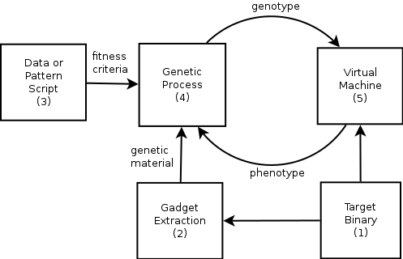
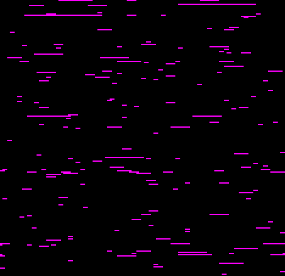
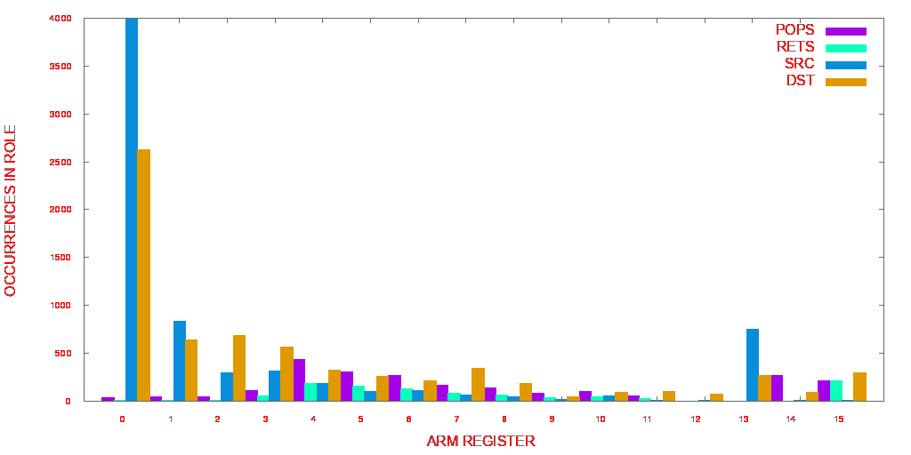
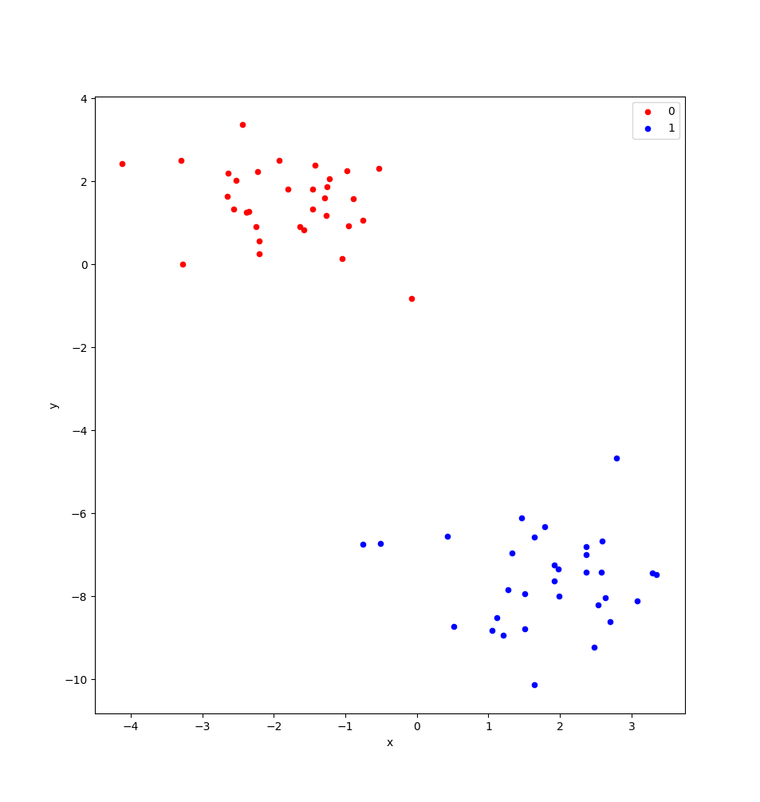
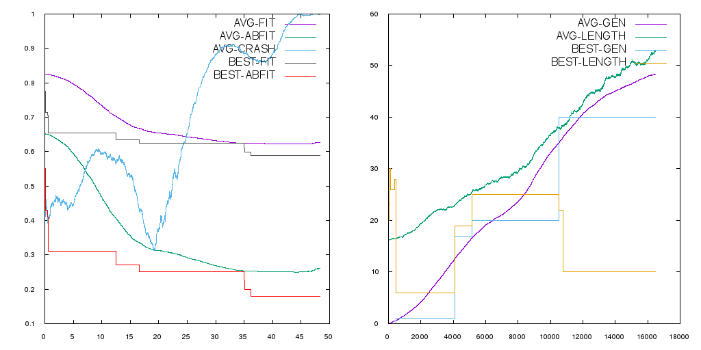
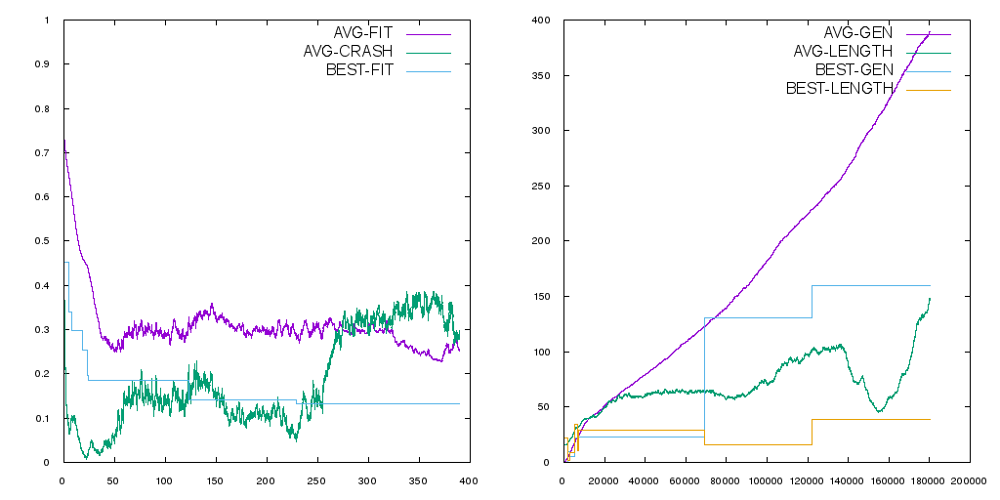
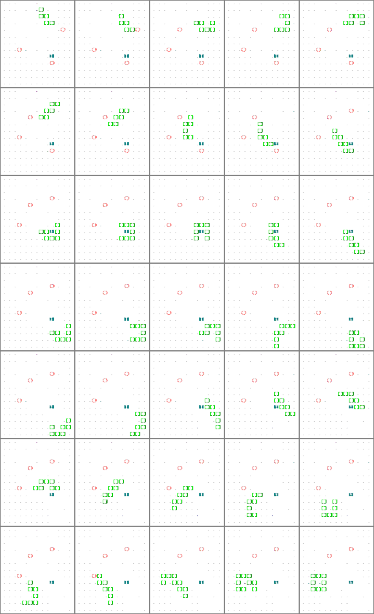
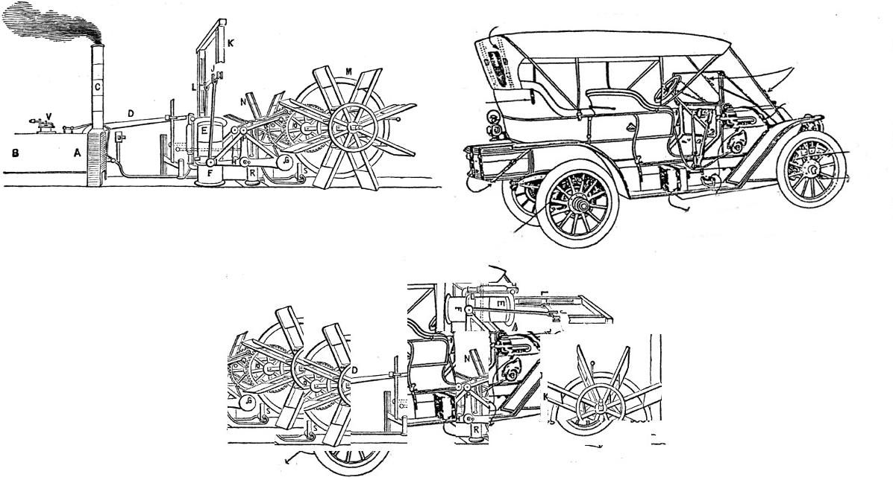

Created: 2018-04-14 Sat 16:06
This thesis explores the use of evolutionary techniques in rop. It details the design and implementation of an engine called roper, which employs the methods of gp to generate declaratively specified rop payloads from scratch, and walks through a series of experiments that establish the feasibility of this approach. Since this is, to the best of my knowledge, the first time that evolutionary techniques have been put to work in the field of return-oriented programming, my intention is only to establish a proof of concept, rather than to advance the state of the art in terms of performance and precision.1
The “crafted input” by means of which a hacker controls the execution of an exploited system is typically best understood as a sequence of instructions for a previously unknown virtual machine, whose supervenience on the intended machine is accidental, and often unknown before it is exploited. These payloads tend to be short, highly constrained by contingent pressures, and forged from obscure and irregular materials. These factors, which tend to greatly increase the ratio of difficulty to functionality in payload implementation, for human programmers, also make the problem well suited to evolutionary approaches. This, at least, was the intuition that sparked this project. The hope is that by putting evolutionary techniques to work in this field, we can better explore and understand the algorithmic wilderness that supervenes on our machines, and gain a deeper sense of the possibilities harboured there.
The techniques developed here can quite viably be put to work in the field of offensive cybersecurity, and be used to generate swarms of attack payloads whose diversity is, for all intents and purposes, unbounded. The technology developed here could, with minor adaptations,2 used to test and train ids, or provide one more instrument in the penetration tester’s toolbox.
I hope that the work presented here may be of interest to newcomers to both low-level exploit development and genetic programming, and to those who may have a solid background in one but not the other. The work presented here shows how problems drawn from the field of application security provide an extremely fertile ground for evolutionary experimentation, which I believe is of interest in its own right, independent of applications.
Of course, there’s nothing preventing the use of this technology by malicious actors, and in this respect roper is in the same boat as any other product of security research – the only defence against use by blackhats, after all, would be to ensure that the research is useless. This isn’t just an unavoidable aspect of security research, it’s one of its essential motors. Without the endless arms race between attacker and defender, between whitehat and blackhat, it’s unlikely we’d have even an sliver of the understanding of our own abstractions – and of all their leaky concretizations – that the concern for security demands. The harsh reality that any worthwhile development in security can be picked up and studied by blackhats seeking to use, abuse, apply, subvert, and exploit it, isn’t something we should shy away from or apologise for. It’s the crucible in which our ideas and their implementations are tested, and a tireless generator of new ideas in its own right. The economic and political fates of attackers and defenders may rise and fall in the arena of applied cybersecurity, but the science ratchets on, day and night.
That said, we should nevertheless take a moment to consider the risks posed by the introduction of evolutionary malware, or any technology that could facilitate its development, into the existing information security ecosystem.
I have decided to make the source code for this project available to the public, warts and all, and place it under the gpl. It can be accessed on Github, at https://github.com/oblivia-simplex/roper, and freely experimented with.
In Chapter 2, I set up some of the conceptual background for this study, exploring the broader problems broached by rop, and why it presents itself as an intriguing problem domain for evolutionary computation, before surveying a handful of historical efforts to enlist evolutionary techniques in offensive security and malware design, in Chapter 3.
Chapter 4 introduces my contribution to research in the field of evolutionary offensive security, with an overview of the design and implementation of a rop evolution engine called roper.
Chapter 5 goes over a handful of experimental studies with roper, and consequent modifications to the design.
Chapter 6 lays out some directions for future work and study on this topic, and brings this thesis to a conclusion.
At the most elementary strata of computation – whether we are dealing with the austere formalism of the lambda calculus, the ideal Von Neumann machine model, or the various instruction set architectures that concretize it – the distinction between data and code, on which so much of practical computing is founded, tends to fade from view.3
But at any level where one computational system interfaces with another, “in the real world”, the problem of imposing and maintaining this distinction is critical – even, I would argue, the fundamental problem of cybersecurity. What we call data, generally speaking, is information that one system (A) receives from another (B), or the result of applying any sequence of transformations to that information. “Data”, in other words, is just what flows from one system to another. Insofar as those systems are meant to be distinct – with different capabilities, different access rights, and so on – the notion of data is immediately bound up with those of security and trust. If we are to have any assurances at all about the behaviour of system A, after all, A must, by design, place some constraints on how it lets itself be steered by the data it receives – unless, of course, it is intended to be a general programming environment.4 Data is just data, as opposed to “code”, only to the extent that such constraints hold.
Nothing makes this clearer than rce attacks, each of which can be seen as a “proof by construction” that what we assumed to be “merely data” was in fact code for a machine that we didn’t understand.5 In many such cases, the breach occurs when the attacker slips past the intended interface and dispatches instructions (performs state transitions) on one or more of the system’s “internal” components. Take the classic sql injection attack, for example. The attack succeeds when the attacker crafts the input data to the system in such a way that the system interprets some portion of that data as code. In the simplest cases, this may be done by inserting a single quotation mark in the text provided to an input field. If this input is not safely parsed by the frontend, then any text following the delimiting quote will be interpreted as additional sql instructions, and executed by the backend. The injected delimiter plays the role of an unsuspected pivot between data and code, switching the context of the input string to an sql execution environment.
Something similar happens in the classic style of buffer overflow attack described in Aleph One’s famous textfile, “Smashing the Stack for Fun and Profit” ~/org/bibliography.bib::aleph96. The pivot, in that case, is achieved by the attacker supplying an input string that the vulnerable application writes to a buffer that has not been allocated enough space to contain it. In many cases, this gives the attacker the ability to write to stack memory “beneath” the ill-measured buffer. What makes this dangerous is that, according to a certain, widely implemented abstract machine model, which for lack of a better name,6 we could call the “spmm”, the return address of each subroutine is often stored on the stack as well, just a few words below the space where local variables are stored. This lets the attacker control the return address, which can be redirected to another region of the input data, where the attacker has encoded a sequence of machine code instructions for the vulnerable system’s cpu.
In these cases, and in many, many more, the attacker succeeds in exploiting some oversight in the design or implementation of the input handler, in such a way that the vulnerable system treats some portion of the input just as it would treat its own code. In each of these cases, it’s possible to distinguish two distinct moments:
This is the general outlook that seems to motivate most defensive tactics in computer security. Take, for instance, a tactic that has been widely deployed in an effort to defend against shellcode attacks. These attacks play on the fact that, to the cpu, “code” is wherever the ip is pointing. The stack overflow vulnerability detailed by Aleph One is one such delivery mechanism, but the general strategy of feeding the vulnerable system machine code instructions in the form of input data, and then redirecting the program counter so that it points to that data, and executes it as code, has other forms as well – such as use-after-free attacks, which may exploit a lack of coordination in heap memory management to overwrite a virtual function pointer (an object method, for example) with a pointer to the attacker’s shellcode. Defensive measures against these attacks typically follow one of two prongs: either they inhibit the pivot stage, or they inhibit the payload.
With respect to the pivot stage, buffer overflow attacks can be prevented,
piecemeal, by carefully constraining the data that’s written to fixed-length
buffers on the stack (use strncpy() instead of strcpy(), etc.). The onus,
in this case, falls on the developer, or her linter. They can
also be mitigated by the compiler, by inserting a random string as a sort of
tripwire between the writeable stack buffer and the return address, such that
any attempt to overwrite that portion of the stack would also corrupt this
randomized value or “stack canary”. Neither of these mitigations prevent a block
of malicious code that the attacker has written to memory from being executed,
should some other means of corrupting the instruction pointer become available.
The sort of attack that Aleph One describes could also be blocked by obstructing the attacker’s ability to pass control to the payload, rather than their ability to achieve the initial corruption of the instruction pointer. This is what is achieved, for example, through what Windows natives call “dep”, and what Unix dwellers call, a bit less pronounceably, “w+x”, whereby the memory pages of a running process may be mapped as writeable, or may be mapped as executable, but may no longer be mapped as both.7 With this mitigation in place, the attacker may succeed in corrupting the instruction pointer, and may succeed in loading their attack code into memory, but is unable to pass control to the latter – an instruction pointer dereferenced to a non-executable location in memory will result in a segmentation fault (as Unixers call it) or an access violation error (as it’s known in Windows). This may succeed in crashing the program, and thereby carrying out a non-trivial denial-of-service (DoS) attack, but at no point does the attacker achieve fine-grained control of the process.
There is another way of looking at all of this, which is both more general and more fruitful. As hacker folklore is fond of repeating, what we call a system’s “code” is, in some sense, nothing but the specification of a state machine driven by the input data.8 As Halvar Flake explains, to write a program is to constrain the virtually boundless potential of a general computer so as to have it emulate “a specific finite-state machine that addresses your problem”. “The machine that address the problem,” he go on,
is the intended finite state machine […]
The security properties of the ifsm are ’what we want to be true’ for the ifsm. This is needed to define ’winning’ for an attacker: He wins when he defeats the security properties of the ifsm.
Assuming that there has been no trivial misconfiguration of the ifsm, and that it is, on its own particular level of abstraction, consistent, the attacker defeats those security properties by ferreting out a leak in that abstraction, and tapping into a reserve of computational power that the programmer had considered foreclosed by the ifsm. This is done by first finding a way to access a state from the ifsm that is not accounted for by the ifsm's design. These are what Sergey Bratus ~/org/bibliography.bib::bratus_homepage calls “weird states”. (An example is the state that the cpu enters when its instruction pointer has been overwritten by input.) This is what we have called the pivot of the attack.
“Once a weird state is entered”, Flake continues,
many other weird states can be reached by applying the transitions intended for sane states on them. A new computational device emerges, the “weird machine”. The weird machine is the computing device that arises from the operation of the emulated transition of the ifsm on weird states.
…Given a method to enter a weird state from a set of particular sane states, exploitation is the process of:
- setup (choosing the right sane state)
- instantiation (entering the weird state), and
- programming of the weird machine
so that security properties of the ifsm are violated.
The concept of a weird machine opens onto an extremely versatile and general theory of exploitation, which will remain the backdrop for much of what follows.
It is due to a leaky abstraction of this nature, and an unswerving view of the underlying cpu from the perspective of application programmers and compilers, blinkered by what Meredith Patterson has called “boundaries of competence” ~/org/bibliography.bib::patterson_2012, that w+x ultimately fails to prevent remote code execution. It fails because it is built on an insufficiently general concept of code.
According to this model, computation proceeds by iterating through a buffer of instructions in a designated segment of memory, using a designated register, the “program counter” or “instruction pointer”, to track the location of the next instruction to execute (we’ll call this the IP when referring to its abstract role, but its concretization has different names on different architectures – EIP on x86, RIP on x86_64, pc on arm, etc.) Each instruction prompts the processor to mutate its state (its registers, memory, etc.) in some fashion. “Code” is wherever ip points, and he instruction set is fixed by the architecture.
On this basis is implemented the procedural layer of abstraction, which the underlying architecture is largely designed to accommodate. According to this layer, a program is typically broken up into a collection of subroutines (or “functions”). A subroutine is characterized by two essential properties:
of these properties rely on the stack data structure. Both the scopes, and the execution flow, of subroutines, is organized in a first-in-last-out fashion.
Interestingly, though they are conceptually distinct, the data stack and the execution stack are typically interleafed in practice.
This interleafing is orchestrated, on most modern architectures, by means of
three abstract registers: sp, fp, and ip. On x64_64,
these are implemented by RSP, RBP, and RIP, respectively. On arm, by
SP/R13, FP/R12, and SP/R15. When a subroutine is called, the address of
the next instruction address in the calling routine is typically pushed onto the
stack. (In some cases a special register is used to hold the most recent return
address – the top of the abstract calling stack – as an optimization. This is
the role of lr on arm. For nested subroutine
calls, however, it’s necessary to fall back to a stack structure. The fp is then
used to mark the base of the scope of stack memory that belongs to the
subroutine. Any memory beyond fp is the subroutine’s own to make use of,
though this claim is abandoned when the subroutine returns. Returning from a
subroutine, in most cases, is just a matter of popping the return address from
the control stack, and loading it into the instruction pointer. On x64_64, this
is accomplished by the ret instruction, on arm, by pop {pc}, and on MIPS
by first loading a register from the top of the stack, and then jumping to that
register.
This is, of course, why an attacker can “smash the stack for fun and profit”. Even if they must tailor their attack for a specific architecture, they are attacking a vulnerability in the C virtual machine: that improperly handled writes to the data stack can corrupt the control stack with which it is interleafed. The interleafing makes accessible to the attacker the critical kind of weird states on which their attack pivots. In executing this attack, the attacker violates the conceptual separation of schematically interleafed control and data stacks, but otherwise remains within the same basic abstract machine model. An elegant shellcode payload will even take care to restore any corrupted registers, clear its own local stack, and return control to the caller, as if nothing out of the ordinary had happened. The attacker is descending to a lower level of abstraction, but not an entirely foreign one. It is a level already implicit, and (leaks notwithstanding) encapsulated in the victim process.
A rop chain can be seen as a program written to run on a weird machine, which just happens to supervene on the same process mobilized by the programmer’s machine model, the process that is supposed to be executing a perfectly normal program. Let’s call this a rovm.
Like the programmer’s machine model, the rovm works by iterating through a sequence of instructions, tracking the location of the next instruction by means of a special registerr, and in the process mutates the cpu context. But the instruction set used for this machine is not the instruction set targetted by its host. It is an emergent instruction set, peculiar to the state of conventionally executable memory at the time of the pivot. These instructions are called “gadgets”, and are composed of chunks of data that is:
.text section of the binary;end with a return instruction, or some semantic equivalent – any combination of instructions that results in a value from the stack being loaded into the instruction pointer. This can also be accomplished by means of a combination of load and jump instructions, which gives us “jop”, or jump-oriented-programming, but the difference between jop and rop is not critical here, and for our purposes “rop” will be used to refer to both varieties. In general terms,
To be able to build a program from gadgets, they must be combinable. Gadgets are combinable if they end in an instruction that, controlled by the user, alters the control flow. Instructions which end gadgets are named ’free branch’ instructions. A ’free branch’ instruction must satisfy the following properties:
- The control flow must change at this instruction.
- The target of the control flow must be controllable (free) such that the input from a register or stack defines the target. ~/org/bibliography.bib::kornau09
The rovm is, in some sense, an essentially parasitic, or supervenient, creature. Its instruction set is cobbled together from chunks of machine code whose frequency in the victim process is largely a result of the process’s intended code being crafted with the procedural abstraction in mind.
This point is worth dwelling on for a moment, because it beautifully illustrates
the ingenuity of rop. w+x, after all, prevents the data stack, which
needs to remain writeable by the process, from being used as a code buffer, the
way it is in a shellcode attack. But the schematic idea of code that w+x
guards against is code as understood by the programmer’s machine model. The
rovm is able to use the data stack as a code buffer because it represents a
change in perspective regarding what counts as code, what counts as an
instruction, and what counts as an instruction pointer. Even when a strict
separation of “data” and “code” is in place (via w+x, and/or the
hardware restrictions imposed by a Harvard Bus architecture), the spmm expects
an interleafing of the control and data stacks, and so cannot very well ban the
presence of code segment pointers from its stack, or prevent the loading of the
pointer at the top of its stack into its own designated instruction pointer. But
these two factors are all that are needed in order to superimpose the rovm on
top of the spmm: we don’t need to execute spmm level instructions from the stack,
we just need to be able to use data on the stack to influence the execution
of instructions, in a fine-grained fashion. But this is just what the return
instruction does, in the spmm: it fetches data from the top of the stack, maps
that data to an address in its own code buffer, and then executes the
instructions it finds there, until it is instructed to fetch the next pointer
from its stack. In this way, the spmm already implies the possibility of the
rovm, which is its shadow. The \gls{spmm}’s interleafing of control stack and data
stack makes the principled separation of the writeable and the executable all
but futile, since the latter represents a true separation of code and data
only if the abstract machine model stays fixed.
To paraphrase Eliot: Between the programmer’s abstract machine model, and the actual behaviour of the cpu, between the specification and the implementation, falls the shadow.
A handful of technologies have already been developed for the automatic
generation of ROP-chains. These range from tools that use one of several
determinate recipes for assembling a chain – such as the Corelan Team’s very
handy mona.py 9 – to tools
We are aware of two such projects at the moment: Q ~/org/bibliography.bib::schwartz11, which is able to compile instructions in a simple scripting language into ROP chains, and which has been shown to perform well, even with relative small gadget sets, and ROPC, which grew out of its authors’ attempts to reverse engineer Q, and extend its capabilities to the point where it could compile ROP-chains for scripts written in a Turing-complete programming language. 10 The latter has since spawned a fork that aims to use ROPC’s own intermediate language as an LLVM backend, which, if successful, would let programs written in any language that compiles to LLVM’s intermediate language, compile to ROPC-generated ROP-chains as well.
Another, particularly interesting contribution to the field of automated ROP-chain generation is Braille, which automates an attack that its developers term “Blind Return-Oriented Programming”, or BROP ~/org/bibliography.bib::bittau14. BROP solves the problem of developing ROP-chain attacks against processes where not only the source code but the binary itself in unknown. Braille first uses a stack-reading technique to probe a vulnerable process (one that is subject to a buffer overflow and which automatically restarts after crashing), to find enough gadgets, through trial and error, for a simple ROP chain whose purpose will be to write the process’s executable memory segment to a socket, sending that segment’s data back to the attacker – data that is then used, in conjunction with address information obtained through stack-reading, to construct a more elaborate ROP-chain the old-fashioned way. It is an extremely interesting and clever technique, which could, perhaps, be fruitfully combined with the genetic techniques I will outline here.
To the best of our knowledge, no attempt has yet been made to bring evolutionary methods to bear on the problem of ROP-chain generation; there is little precedence, in fact, for any use of genetic techniques to craft exploits.
While evolutionary techniques have been more or less frequently employed in the field of defensive security – where they are put to work much in the same way as other machine learning algorithms, and built into next-generation firewalls, intrusion-detection systems, and so on – there has been far less exploration of these techniques in the realm of offensive security. This is not to say, however, that the idea has never occurred to anyone – the idea seems to have captured the imagination of hackers, malware engineers, and cyberpunk science fiction authors, ever since there have been such things.
The oldest occurrence of the concept of evolving, intrusive code that I was able to excavate dates to sometime around 1969, in an experiment performed – and subsequently extrapolated into fiction – by the astrophysicist and science-fiction author, Gregory Benford, during his time as a postdoctoral fellow at the Lawrence Radiation Laboratory, in Livermore, California. “There was a pernicious problem when programs got sent around for use: ‘bad code’ that arose when researchers included (maybe accidentally) pieces of programming that threw things awry,” Benford recalls of his time at the LRL.
One day [in 1969] I was struck by the thought that one might do so intentionally, making a program that deliberately made copies of itself elsewhere. The biological analogy was obvious; evolution would favor such code, especially if it was designed to use clever methods of hiding itself and using others’ energy (computing time) to further its own genetic ends. So I wrote some simple code and sent it along in my next transmission. Just a few lines in Fortran told the computer to attach these lines to programs being transmitted to a certain terminal. Soon enough – just a few hours – the code popped up in other programs, and started propagating.
Benford’s experiments unfolded in relative obscurity, apart from inspiring a short story that he would publish in the following year, entitled “The Scarred Man”. As far as we can tell, however, the invocation of “evolution” remained entirely analogical, and did not signal any rigorous effort to implement Darwinian natural selection in the context of self-reproducing code. It was nevertheless an alluring idea, and one that would reappear with frequency in the young craft of virus programming.
Though anticipated by over a decade of scattered experiments, the concept of “computer virus” made its canonical entrance into computer science in the 1985 dissertation of Fred Cohen, at the University of Southern California, Computer Viruses ~/org/bibliography.bib::cohen85. Computer Viruses is a remarkable document. Not only does it provide the first rigorously formulated – and formalized – concept of computer virus, which Cohen appears to have discovered independently of his predecessors (whose work was confined to obscurity and fiction), explore that concept at the highest possible level of generality, in the context of the Turing Machine formalism, develop an elegant order-theoretic framework for plotting contagion and network integrity, leverage language-theoretic insights to subvert then-hypothetical anti-virus software through Gödelian diagonalization, and suggest a number of defenses, such as the cryptographic signing of executables, which are still used today, it also hints – elliptically – at the potential for viral evolution. At first glance, what Cohen calls the evolution of a virus resembles what would later be called polymorphism or even metamorphism – the process of altering the syntactic structure of the pathogen in the course of infection, so that the offspring is not simply a copy of the parent. This is indeed enough to expose the virus to a certain amount of differential selective pressure, so long as antiviral software (the virus’s natural predator) pattern matches on the virus’s syntactic structure (the precise sequence of opcodes used), or on some low-level features on which the syntax supervenes (one or more bitwise hashes of the virus, for example). But Cohen goes a step further than this, and considers a far broader range of infection transformations that do not preserve semantic invariants. That is to say, he considers reproduction operators – operators embedded in the virus itself, which, following Spector ~/org/bibliography.bib::spector01, we can call “autoconstructive operators” – which generate semantically dissimilar offspring.
Cohen thus deploys all the essential instruments for an evolutionary treatment of viruses:
He goes no further in systematizing this dimension of the problem, unfortunately, and nowhere in this text do we find anything that either draws on or converges with contemporaneous research into evolutionary computation as a mechanism for program discovery or artificial intelligence.
Cohen can hardly be blamed for this, of course. The dissertation as it stands is a work of rare ambition and scope. The casual observer of virus research and development over the past three decades, however, might be surprised by the impression that so little has been done to bridge the distance that lay between it and study of evolutionary computation. While the rhetoric surrounding the study of computer viruses remained replete with references to evolution, to ecology, to natural selection, and so on, efforts to actually integrate the two fields appear to have been rare.
This impression is not wholly accurate, however. Closer study shows us that the experimental fringe of the vx scene has indeed retained an interest in exploring the use of genetic methods in their work. If this has gone relatively unnoticed by the security community, this is likely for one or two reasons:
For reasons of stealth, virus writers have explored ways of incorporating variation into their mechanisms of infection and replication. The first trick to surface was simple encryption, employed for the sake of obfuscation rather than confidentiality. This first became widely known with the Cascade virus, circa 1988 ~/org/bibliography.bib::szor05. Viruses using this obfuscation method would encrypt their contents using variable keys, so that the bytewise contents of their bodies would vary from transmission to transmission. The encryption engine itself, however, would remain unencrypted and exposed, and so antiviral software simply looked for recognizable encryptors instead.
Next came oligomorphic viruses, starting with Whale in 1990 ~/org/bibliography.bib::whale90. These would use one of a fixed set of encryption engines, adding some variability to the mix. This would make the problem of detection some 60 or 90 times harder, depending on the number of engines, but such distances are easily closed algorithmically.
Next came polymorphic engines, which would scramble and rebuild their own encryption engine with each transmission, while preserving all the necessary semantic invariants. The antivirus developers countered by running suspicious code in emulators, waiting until the body of the virus was decrypted before attempting to classify it.
The last and most interesting development in this (pre-genetic) sequence rests with metamorphic viruses, which redirected the combinatorial treatment that polymorphics reserved for the encryption engine onto the virus body as a whole. There was no longer any need for encryption, strictly speaking, since the purpose of encryption in polymorphism is to obfuscate, not to lock down, and this allowed viruses to avoid any reliance on the already somewhat suspicious business of decrypting their own code before running.
In biological terms, what we’re seeing with both polymorphic and metamorphic viruses is a capacity for ontogenetic variation. While it is possible for the results of metamorphic transformations to accumulate over generations, in most cases (unless there are bugs in the metamorphic engine), these changes are semantically neutral, and do not affect the functionality of the code (though this raises a subtle point regarding what we are to count as ’functionality’, especially when faced with detectors that turn syntactic quirks and timing sidechannels into a life-or-death matter for the virus). They are also, in general, reversible, forming a group structure. So long as they are not subjected to selective pressure, and complex path-dependencies don’t form, the ’evolution’ of a metamorphic virus typically has the form of a random walk.
It is nevertheless evident how close we are to an actual evolutionary process.
In 2002, Mental Driller developed and released a virus that bridged the gulf between metamorphic viruses and a new variety of viruses that could be called “genetic”. MetaPHOR is a highly sophisticated metamorphic virus, capable of infecting binaries on both Linux and Windows platforms. Written entirely in x86 assembly, it includes its own disassembler, intermediate pseudo-assembly language, and assembler, as well as a complex metamorphic and encryption engines. Its metamorphic engine mutates the code body through instruction permutation, register swapping, 1-1, 1-2, and 2-1 translations of instructions into semantic equivalents, and the injection of ’garbage code’, or what we will later call “semantic introns”.
But the final touch, which elevates this program to evolutionary status, is the use of a simple genetic algorithm, which is responsible for weighting the probabilities of each metamorphic transformation type. As Mental Driller comments in the MetaPHOR source code:
I have added a genetic algorithm in certain parts of the code to make it evolve to the best shape (the one that evades more detections, the action more stealthy, etc. etc.). It’s a simple algorithm based on weights, so don’t expect artificial intelligence :) (well, maybe in the future :P).
The way it works is that each instance of the virus carries with it a small gene sequence that represents a vector of weights – one for each boolean decision that the metamorphic engine will make when replicating and transforming the virus, in the process of infection. These are modified a little with each replication. The hope is that the selective pressure imposed by antiviral software will select for strains of the virus that have evolved in such a way as to favour transformations that evade detection, and shun transformations that give the virus away. (Descendants of the virus, for instance, may adapt in such a way as to never use decryption, if that should turn out to the a tactic that attracts the scanners’ attention, in a given ecosystem. Or they may evolve to be less aggressive in infecting files on the same host, or filter their targets more carefully according to filename.
The frequent invocation of ecological and evolutionary tropes in virus literature, combined with the lack of any genuine appearance of evolutionary malware, has led many to speculate as to its impossibility. The most frequently cited reason
for the unfeasibility of viral evolution is computational brittleness – the claim being that the machine languages (or even scripting languages) that most viruses are implemented in are relatively intolerant to random mutation. The odds that a few arbitrary bitflips will result in functional, let alone ’fitter’, code is astronomically small, these critics reason. This is in contrast to the instruction sets typically used in GP and ALife, which are designed to be highly fault-tolerant and evolvable.
This is so far from being an insuperable obstacle that it suggests its own solution: define a more robust meta-grammar to which genetic operators can be more safely applied, and use those higher-level recombinations to steer the generation of low-level machine code.
We can find this idea approximated in a brief article by ValleZ, appearing in the 2004 issue of the vxer ezine, 29A, under the title “Genetic Programming in Virus”. The article itself is just a quick note on what the author sees as interesting but in all likelihood impractical ideas:
I wanna comment here some ideas i have had. They are only ideas… these ideas seems very beautiful however this seems fiction more than reality.
ValleZ goes on to sketch out the main principles behind genetic programming, and then gets to the crux of the piece: “how genetic programming could be used in the virus world”.
As already noted, most of the essential requirements for GP are already present in viral ecology: selective pressure is easy to locate, given the existence of antiviral software, and replication is a given. However, ValleZ notes, the descendant of a virus tends to be (semantically) identical to its parent, and even when polymorphism or metamorphism are used, the core semantics remain unchanged, and there is no meaningful accumulation of changes down generational lines.
(Conjecture: If we were to picture the distribution of diversity in the genealogy of a metamorphic virus, for instance, we would see a hub-and-spoke or starburst design in the cluster, with no interesting progressions away from the centre. Take a look at the Eigenvirus thesis to see if there’s any corroboration there.)
ValleZ suggests the use of genetic search operators – mutation, and, perhaps, in situations where viruses sharing a genetic protocol encounter one another in the same host, crossover – in virus replication. They would take over the work that is usually assigned to polymorphic engine, with the added, interesting feature of generating enough semantic diversity for selective pressures to act on. But for this to work, they note, it would be necessary to operate not on the level of individual machine instructions (which are, as noted, rather brittle with respect to mutation) but higher-level “blocks”, envisioned as compact, single-purpose routines that the genetic operators would treat as atomic.
The idea is left only barely sketched out, however, and ValleZ concludes by reflecting that it seems more an idea “for a film than for real life, however i think its not a bad idea :-m”.
In 2005, an email arrived in the inbox of the virus researchers Peter Ferrie and Heather Shannon. Attached was a sample of what would go on to be known as the W32/Zallome worm. The code of the worm appeared unweildly and bloated, but its unusual polymorphic engine captured the analysts’ attention.
At GECCO ’09, Sadia Noreen presented a report on her recent experiments involving the evolution of computer viruses. The approach she adopted was to first collect samples of several varieties of the Beagle worm (CARO name W32/Bagle.{a,b,c,d,e}@mm), and then define a regular grammar that isolated the separable components of each variant, and which could be used to recombine and generate new variants. An initial population of grammatically correct, but randomly generated, individuals would then be spawned.
The fitness function used in these experiments was, curiously, resemblance to the existing samples, as judged by a distance metric and then ratified by an antivirus scanner. The idea was that if an evolved specimen so closely resembled the original samples they were indiscernibly to a scanner, than this would prove that viruses could be generated using evolutionary techniques.
This isn’t the most compelling use of evolutionary techniques in this realm – that random sets of parameters can be made to approximate or match a training sample, when the fitness function depends precisely on the resemblance of the former to the latter, is not surprising. Genetic algorithms are often introduced through the use of “hello world” exercises posing formally similar problems. But the framework that Noreen developed could, itself, be put to much more interesting and creative ends, and the idea of assuring the evolvability and mutational robustness of viral genotypes by defining and adhering to a strict grammar is promising.
The idea of taking detection as a goal (in an effort to establish the possibility of evolution in this context) rather than as an obstacle is a strange approach, given that several scanners also use grammatical analysis to detect the code (often limiting themselves to regular expressions and FSAs), and so it’s quite possible that the grammar itself went a long way towards preserving the invariants that resulted in detection.
If the goal were to evolve viruses that had a chance of being viable in the wild, and so had to contend with the selective pressures imposed by detectors, the ideal approach would be to employ a grammar with greater Chomsky complexity, as the virus writer known as “Second Part to Hell” points out in a 2008 post on his website ~/org/bibliography.bib::spth08.
Second Part to Hell’s experiments in viral evolution appear to be the most sophisticated yet encountered. SPTH begins by identifying computational fragility as the principal obstacle to the the evolvability of virus code as implemented in x86 assembly. An obvious way to circumvent this problem, SPTH reasons, is to have the genetic operators operate, not on the level of architecture-specific opcodes, but on an intermediate language defined in the virus’s code itself.
SPTH designed his IL to be as highly-evolvable as possible, structured in such a way that an arbitrary bit-flip would still result in a valid instruction, so that they could be permuted or altered with little risk of throwing an exception, and so that there would exist a considerable amount of redundancy in the instruction set: 38 semantically unique instructions are defined in a space of 256, with the remainder being defined as NOPs, affording a plentiful supply of introns, should they be required.
“The mutation algorithm is written within the code (not given by the platform, as it is possible in Tierre or avida)”, SPTH notes, referring to two well-known Artificial Life engines. ~/org/bibliography.bib::spth10a
The same is true of the IL syntax. In fact, what’s particularly interesting
about this project, and with the problem of viral evolution in general, is that
the entire genetic machinery must be contained either in the organism itself, or
in features that it can be sure to find in its environment. In Evoris, the only
mechanism that remains external to the organism is the source of selective
pressure – antivirus software and attentive sysadmins. Two types of mutation
are permitted with each replication: the first child is susceptible to bit flips
in its IL sequence, with a certain probability. With the second, however, the IL
instruction set may mutate as well, meaning that the virtual architecture itself
may change shape over the course of evolution. Interestingly, the first-order
mutation operators in the virus are themselves implemented with the viral IL,
and so a mutation to the alphabet – one that changes the xor instruction to a
nop, for instance – may, as a consequence, disable, or otherwise change the
functioning of, first-order mutation (as SPTH observed in some early
experiments).
Evolus extends Evoris to include a third type of mutation: “horizontal gene transfer” between the viral code and files that it finds in its environment. Since the bytes taken from those files will be interpreted in a language entirely foreign to their source, there’s no real reason to expect any useful building blocks to be extracted, unless, of course, the Evolus has encountered another of its kind, in which case we have something analogous to crossover. (Horizontal gene transfer with an arbitrary file would then be analogous to “headless chicken crossover”, with the random bytes being weighted to reflect what the distribution found in the files from which the bytes are sourced.)
Though SPTH’s results were fairly modest, the underlying idea of having the virus carry with it its own language for genotype representation, and to take cares to ensure the evolvability of that language – and to expose the genetic language itself to mutation and selective pressure – is inspired, and turns SPTH’s experiments into valuable proofs of concept. With them, at least two major obstacles to the use of evolutionary techniques in the field of offence have been addressed and, to some extent, solved by the vx community: the problem of code brittleness, or the viability of genetic operators, and the problem of self-sufficiency (unlike academic experiments in evolutionary computation, the virus must carry an implementation of the relevant genetic operators with it everywhere it goes – “the artificial organisms are not trapped in virtual systems anymore”, SPTH writes, in the conclusion to the first of his series of essays on Evoris and Evolus, “they can finally move freely – they took the redpill” (~/org/bibliography.bib::spth10a, 18).
Interestingly, even in the virus scene, which is certainly where we find the most prolonged and serious interest in evolutionary computation among black and grey hat hackers, the uses to which evolutionary methods are put tend, for the most part, to be fairly modest, and oriented towards defence (defending the virus from detection). When genetic operators are employed, they tend to serve as part of a polymorphic or metamorphic engine, and the force of selection principally makes itself felt through antivirus and IDS software. Outside of science fiction ~/org/bibliography.bib::xfiles-killswitch, however, we have not seen any discernable attempt to put evolutionary techniques in the service of malware that learns, in a fashion comparable to what we see with next-generation defence systems. There is nevertheless a tremendous amount of potential in this direction, and the threat of unpredictable, evolving viral strains emerging from this sort of research is one that hasn’t failed to capture the imagination.
In a paper presented at the 2008 Virus Bulletin conference, two artificial life researchers, Dimitris Iliopoulos and Christoph Adami, together with malware analyst Péter Ször of Symantec, outline the threat that such technology may pose and the extent to which it would be feasible to produce ~/org/bibliography.bib::iliopoulos11. The greatest risk, it seems, concerns the possibility of detecting such malware. Existing obfuscation techniques, they note, all share the same theoretical limit: though polymorphic and metamorphic variants of a malware strain may evade literal signature detection, and and syntactic/structural detection, they do tend to share common semantic invariants, and remain vulnerable to detection by means of a well-tuned behavioural profile. “Simply put,” they write,
biological viruses are constantly testing new ways of exploiting environmental resources via the process of mutation. In contrast, computer viruses do not exhibit such traits, relying instead on changing their appearance to avoid detection. Functional (as opposed to cryptic) variation, such as the discovery of a new exploit or the mimicry of non-malicious behaviour masking malicious actions, is not part of the arsenal of current malware.
Evolutionary techniques, by contrast, could allow for the generation of malware instances whose semantic variation is bounded in extremely minimal, abstract, and subtle fashions, as demanded by the task at hand, offering little to no foothold for existing detection technologies. If allowed to develop more freely, moreover, with no selective pressures beyond replication, survival, and the subversion of the systems intended to stop them – and if they could incubate in environments where those particular pressures are gentle enough to allow for relatively “neutral” (non-advantageous, but non-deleterious) exploration of their environment – then “the emergence of complex adaptive behaviors becomes an expected result rather than an improbability, as long as exploitable opportunities exist within the malware’s environment” ~/org/bibliography.bib::iliopoulos11.
Ször, Iliopoulos, and Adami, here, are discussing the use of evolutionary techniques in virus generation, rather than payload generation, as examined in this thesis – and, indeed, as we’ll see, despite the relative dearth of concrete advancements, the theme of evolutionary computation has been a preoccupation of virus writers ever since the first computer virus was crafted, a phenomenon we don’t see paralleled in other fields of offensive/counter-security. There are challenges facing the deployment of evolutionary malware “in the wild” that we don’t encounter when developing it “in vitro” – that is to say, in a virtual laboratory, where selective pressures can be fine-tuned with care, rather than left to external circumstance. Where the research presented here rejoins Szöor, Iliopoulos, and Adami’s anticipations is in examining the results of relatively free and unconstrained exploration of a host environment by evolutionary malware, where the tether to semantic invariance is intentionally kept as loose as possible and the specimens have the ability to salvage and recombine whatever functional code they can from their hosts. This is, after all, the very nature of a “code reuse” or “data-only” attack – terms often given to rop in the literature – a quality that makes them an especially appealing subject for evolutionary study. It should nevertheless be emphasized that we are not engineering viral malware here – \gls{roper}’s populations are not capable of self-replication, and do not encapsulate their own genetic operators. For that, they rely on the roper engine. Once generated, they can certainly be deployed in the wild, but we do not expect any such specimens to be capable of reproduction, there, and so their evolutionary history ends as soon as they exit the incubator.
The historical lineage that comes closest to what we are doing here, then, is what we could call evolutionary payload generation. This lineage is considerably shorter – we see no comparable fascination with evolutionary techniques in the exploit-writing world, as compared to the vx scene – but the achievements that have been made in this direction tend to be considerably more robust, in terms of evolutionary computation. The most likely reason for this is simply that payload evolution – where the malware is produced using genetic techniques, but is not expected to continue evolving once “released” – is amenable to laboratory study, and to rapid iterations of the evolutionary cycle, in a way that virus crafting is not.
Gunes Kayacik’s 2005-2011 research (see ~/org/bibliography.bib::kayacik06, ~/org/bibliography.bib::kayacik10, and ~/org/bibliography.bib::kayacik11, for instance) brought evolutionary methods – specifically, linear genetic programming (LGP) and grammatical evolution (GE) – to bear on the problem of automatically generating shellcode payloads for use in the sort of buffer overflow attacks already known to us from Aleph One. The aim of that research is twofold:
Kayacik’s research was one of the initial inspirations for the current project, and remains one of the very few serious attempts to put evolutionary methods to work in the domain of offensive cybersecurity. I was quite surprised to find – or, rather, fail to find – any significant research by others, continuing in this vein, after 2011.
Despite the relative dearth of work being done on the intersection of exploit research and evolutionary computation – an intersection which is all but barren, though flanked by thriving research communities on both sides – it is our conviction that this may become extraordinarily fertile terrain for research. Evolutionary methods are naturally well-suited to the exploration of the possibility space inhabited by weird machines. This is not least due to the fact that such machines, whose existence is an emergent and altogether accidental effect, are in no way designed to be hospitable to human programmers. Even the most obtuse and ugly programming language – including the tiramisu of backwards-compatible ruins that makes up the x64_64 – is designed with some aspiration of cognitive tractability and elegance in mind. As much as it may seem that this or that programming environment cares little for the programmer, this is never truly the case – until you enter the terrain of weird machines. These are landscapes that were never intended to exist in the first place – they’re a wilderness supervening on artifice.
What we will establish in the pages that follow is that it is indeed possible to generate functioning, rop chain payloads through purely evolutionary techniques. By “purely evolutionary”, here, we mean that payloads are to be evolved from scratch, starting with nothing but a collection of gadget pointers, of which we have virtually no semantic information, and a pool of integer values. This stands in contrast to most previous experiments in the field of offensive security, where the role of evolutionary techniques is restricted to the fine-tuning or obfuscation of already existing malware specimens or to the recombination of high-level modules into working programs, following an established pattern.
By “functioning”, we mean only that we are able to generate ROP payloads that reliably perform to specification, for a wide variety of tasks. Some of these tasks are simple and exact – such as preparing the cpu context for a given system call, with certain parameters – whereas others are complex but vague in nature – tasks concerning the classification of data by implicit properties, or interacting with a dynamic environment. In each case, all that is provided to our system by way of instruction are the specifications of the task, translated into selective pressures in the form of a “fitness function”.
It should be emphasized that this system, acronymously named roper, is presented as a proof of concept, and not as a refinement of evolutionary techniques. roper is far from being an impressively efficient compiler or classifier, and no attempt was made to have it be otherwise. What roper is, is the first known use of evolutionary computation in return oriented programming, and, more generally, the first time that genetic programming has been put to work at a task for which it seems so obviously suited: the autonomous programming of state machines that emerge entirely by accident, supervening on the systems we designed, without our having ever designed them, and having languages and instruction sets all their own, without having ever been specified, spontaneously coalescing in the cracks of our abstractions.

Figure 1: A bird’s eye view of roper
Algorithms \ref{alg:initpop}, \ref{alg:evalgen}, and \ref{alg:evolve} furnish a bird’s eye view of roper, abstracting away from questions of implementation, and streamlining away various bits of functionality aimed at optimization, bookkeeping, and fine-tuning.
roper begins with the analysis of an executable binary file (either an
application or a library). For the time being, we are restricting
ourselves to binaries targetting the 32-bit armv7 architecture, in ELF
format, but there is nothing essential about this restriction, and
roper could easily be extended to handed a variety of hardware
platforms and executable formats, if desired. It harvests as many viable
ROP gadgets as it can from the file (within parameterizable limits), by
means of a linear sweep search, walking backwards through the file’s
executable .text section until it hits a return instruction, and then
walking further backwards until it reaches an instruction that would
prevent the execution flow from reaching the return. This isn’t the
most thorough or exacting technique for finding gadgets, and a wider
variety of potentially usable gadgets can be uncovered by means of
a constraint-solving algorithm, which is able to detect stack-controllable
indirect jumps other exploitable control-flow artefacts as well. (We experiment
with such an approach in roper II, which is still in progress at the time of
writing.) A linear sweep nevertheless suffices to provide us with a fairly
generous number of gadgets for our purposes, and has the advantage of being
both simple and efficient.
The addresses of these gadgets, together with a pool of potentially useful immediate integer values and data pointers, which can be supplied by the user, or inferred from the specification of the problem set, supply us with the primtive genetic units from which the first genotypes in the population will be composed. With no more abuse of terminology than is customary in evolutionary computation, we can call this the “gene pool” of the population. It should nevertheless be noted that the biological concept of gene presupposes many structural constraints that have, as of yet, no parallel in our system.
The initial population, as yielded by Algorithm \ref{alg:initpop}, is little more than an array of variable-length vectors of fixed-width integers (32-bits, so long as we are restricting ourselves to the armv7, but, again, this restriction matters little so far as the system’s algorithmic structure is concerned). The length of the initial individuals is left parameterizable, but is upper-bounded by the amount of stack memory that will be available in the target process for our attacks to write to. We will complicate this structure somewhat, in Section 4.2, but it remains a useful simplification.
The main loop, outlined in Algorithm \ref{alg:evolve}, is built around a well-known and widely used genetic programming algorithm called “tournament selection”. On each iteration of the loop, \(n\) (typically 4) distinct candidate genotypes are chosen from the population, with equal probability. Each is then mapped to its phenotype (its behavioural profile in the emulated cpu), and its fitness evaluated (by applying the fitness function to that profile). The \(m\) (typically 2) candidates with the best fitness are selected for reproduction, while the least-fit \(k\) candidates are culled from the population.
The genotypes selected for reproduction are then passed to our genetic operators, which will return \(k\) offspring, who will replace the least-fit \(k\) candidates in the tournament. In the genetic programming literature, these operators are often referred to as the “search operators”, as they “define the manner in which the system moves through the space of possible solutions” (~/org/bibliography.bib::banzhaf98, 144). In roper, our genetic operators comprise a single-point crossover function, which maps a pair of parents into a pair of offspring, and a mutation operator, which maps a single genotype into a variant thereof. The internals of these operators are detailed in Section 4.3.
This loop continues until the halting conditions are satisfied. These are most often set either to a maximum number of iterations, or the attainment of a set degree of fitness by the population’s fittest specimen.
In the following sections, we will explain the finer-grained design decisions involved in implementing the algorithms specified above.
In the following sections, I will unfold and justify the decisions that went into implementing the algorithms surveyed in Section 4. We can begin with the representation of the genotypes constructed by the spawn-individual() algorithm, called on line \ref{alg:initpop:line:spawn-individual} of Algorithm \ref{alg:initpop}.
Since the aim of roper is to foster the evolution of ROP chains, we must begin by supplying the engine with a sufficient pool of gadgets, harvested from the target executable. 11
There are several ways that this can be done, but the simplest is just to
scan the executable for a subset of easily recognizable ’gadgets’ using a
linear sweep algorithm, shown in Algorithm \ref{alg:rop-sweep}. Since we are
dealing only with a RISC instruction set architecture here, we can avoid
several complexities in our gadget search that we would need to grapple with
were we adapting roper to handle CISC instruction sets (such as the x86 and
its ilk) as well. The instructions of a RISC ISA are all of equal length
(with a certain exceptions, and assumping the mode fixed), and so if a
sequence of bytes beginning at address \(i\) is parsed as instruction \(X\)
when beginning the parse from \(i\), then it will also be parsed as \(X\)
when beginning the parse from some \(j < i\). To put it another way, the
list of RISC instructions parsed from bytevector \(\mathbf{C}\), beginning
at address \(i\), extends monotonically with each decrement of \(i\).
In practical terms, this means that an instruction that looks like a
return from far away will still look like a return by the time you’ve parsed your
way up to it. This is very different from what we encounter with CISC ISAs,
where the length of instructions is variable, and instructions are not aligned.
Suppose we had the string "aabbcc" of bytes. Suppose that aa parses to
α, ab parses to β, bb parses to τ, cc parses to δ and
bcc parses to γ. If we begin the parse from the beginning of the string,
we get \(\alpha \tau \delta\). But if we increment our cursor one byte forward
before parsing, then our parse yields \(\beta \gamma\), with δ nowhere
to be seen. In order to adapt our gadget harvesting algorithm to CISC ISAs,
therefore, we would have to continually check to ensure that the return
instruction spotted at line \ref{alg:rop-sweep:line:see-ret} of
Algorithm \ref{alg:rop-sweep} is still parseable as a return, and still reachable, from
the address indicated by \(i\) on line \ref{alg:rop-sweep:line:storegadget}. This
would increase the complexity of the algorithm substantially.
Fortunately, for the time being, we are concerned only with the two main instruction sets of the armv7: the arm instruction set, which is aligned to four-byte intervals, and the thumb instruction set, which is aligned to two-byte intervals. A sufficient supply of gadgets can usually be found by passing our extraction algorithm twice over the executable segments of our target binary, gathering a pool of both arm and thumb gadgets. Since the least significant bit of an instruction address is invariably 0, for this ISA, the arm cpu uses this bit to distinguish between arm mode and thumb mode. We therefore increment the address of each of our freshly harvested thumb gadgets by 1.
From a certain perspective – that of the evaluation engine – the individual genotypes of the population are little more than bare ROP-chain payloads: vectors of 32-bit words, each of which is either a pointer into the executable memory of the host process, or raw data (the former being a subtype of the latter, of course). The view afforded to the genetic operators, and to the initial spawning algorithm, exposes slightly more structural complexity, which is introduced in response to the following problem:
In the set of 32-bit integers (\(\texttt{0x100000000}\) in all), the subset representing
the set of pointers into the executable memory segments of a given ELF file
tends to be rather small: in the case of tomato-RT-N18U-httpd, an HTTP
server that ships with a version of the Tomato firmware for certain arm
routers, which we will be using for a few of the experiments that follow,
we can see that only \(\texttt{0x1873c} + \texttt{0xc0} = \texttt{0x187ec}\) bytes are mapped to executable
memory. Now, the armv7 cpu is capable of running in two different modes, each
with their own instruction set: arm mode, which requires the instructions to
be aligned to 4-byte units, and thumb mode, which demands only a 2-byte alignment
of instructions. Since the least significant bit in a dword can therefore not be
used to differentiate between instruction addresses, the armv7 cpu uses it to
distinguish between the two modes: any address \(a\) whose least significant bit is 1
(i.e., any odd-valued address) is dereferenced to a thumb instruction
at address \(a \oplus 1\) (rounding down to the nearest even address).
This gives us a total of \(\frac{\texttt{0x187ec}}{4} + \frac{\texttt{0x187ec}}{2} = \texttt{0x125f1}\) valid
executable pointers – which, roughly, means that only one in fifty-thousand
of integers between 0x00000000 and 0xFFFFFFFF can be dereferenced to executable
memory in a the ELF executable in question – a ratio that is seldom increased
by more than one or two orders of magnitude, even when dealing with large,
statically linked ELF binaries.
12
This means that if we allow the integers composing the genotypes of our initial population to be randomly selected from the entire 32-bit range, only a tiny fraction of those integers will dereference to any meaningful executable addresses in the code – let alone useful gadget addresses. Restricting the pool of integers sampled to the set of valid executable pointers, let alone potentially useful gadget points, however, may deprive the population of useful numerical values.
The execution of these individuals, after all, will be driven by return
instructions, and these, in arm machine code, are most often implemented as
multi-pops, which pop an address from the stack into the program counter, while
simultaneously popping a variable number of dwords into other, general-purpose
registers. This means that each return – each “tick” of the ROP state-machine
– not only steers the control flow of our machine, sending it to a new gadget,
but the data flow as well, furnishing each gadget with a handful (between zero
and a dozen) of numerical values, to use internally. We don’t necessarily want
to restrict these numerical resources to the range of gadget pointers – it would
be better, in fact, if we could tailor the pool of “potentially useful” numerical
values to a set of integers (including, perhaps, data pointers) that seems suited
to the problem set at hand.
This suggests a potentially useful structural constraint that we can
impose on the genotypes, to increase the likelihood that they will be found
useful for the problem space at hand, and greatly increase the probability that
.text pointers will be popped into pc, while other integers
integers land predominantly in general-purpose registers.
To do this, we calculate the distance the stack pointer will shift
when each gadget executes, the \gls{spd} of \(g\) or \(\gls{spd}(g)\), and then clump together
each gadget pointer \(g\) with a vector of \(\gls{spd}(g)-1\) non-gadget
values. Consider, for example, the instruction,
\[\mathtt{LDMIA!~~~~SP,~~\{R0, R7, R9, PC\}}\]
which pops the stack into registers R0, R7, R9, and pc, in sequence,
“returning” the program counter to the address represented by the fourth dword
on the stack, while at the same time populating three general purpose registers
with the stack’s first three dwords. This instruction has a \(\gls{spd}\)
of 4. For a gadget \(g\), we define \(\gls{spd}(g)\) as
\[\gls{spd}(\pi) = \sum_{i\in \pi} \gls{spd}{i}\]
for some control path \(\pi\) in \(g\) that reaches the return. In practice,
we choose our initial pool of gadgets in such a way that each contains only a basic
block of code, with control flow entirely in the hands of the return instruction
that terminates it, so that the choice of \(\pi\) is unique for each \(g\). If this
condition is relaxed, we suggest generating \(n\) distinct clumps for each
distinct member of \(\{\gls{spd}(\pi)|\pi \textit{ is a control path in } g\}\).
Exactitude isn’t strictly necessary, here, however – as we’ll see, the
evolutionary process that follows is robust enough to handle a fairly large
number of gadgets with miscalculated \(\gls{spd}\) values. A good rule of thumb,
here, is that when the approximation of \(\gls{spd}(g)\) is left inexact, in the
interest of efficiency, dump several options into the pool, and let natural
selection sort them out.
Given a gadget entry point address \(\addr{g}\), a “clump” around \(g\) can now be
assembled by taking a stack of \(\gls{spd}(g)-1\) arbitrary values, and pushing
\(\addr{g}\) on top of it. By the time \(g\) has run to completion, it will have popped
\(\gls{spd}(g)\) values from the process stack. The first \(\gls{spd}-1\) of
these will populate the general purpose registers of the machine, and the
\({\gls{spd}}^{\textit{th}}\) will pop the entry point of the next gadget,
\(g'\), into pc. That entry point, \(\addr{g'}\) will be found at the top of the
next clump in the sequence that makes up the genotype.
13
As explained in Section 2.2.2, it is often helpful to think of each gadget as an instruction in a virtual machine – an emergent machine, supervening on the host’s native instruction set architecture. What we’re calling a clump here maps onto this concept of “instruction”, but with a slight displacement: the gadget address can be seen as something like an “opcode” for the rovm, and the immediate values in each clump can be seen as operands – but operands of the next instruction, not of the instruction whose opcode is represented by their own clump’s gadget pointer.
When the initial population is generated, we take a pool of gadget pointers, harvested from the target binary (see Section 4.1), and a pool of integers and data pointers, supplied by the user as part of the problem specification. We then form clumps, as described above, using randomly chosen elements of these two pools, as needed. The clumps are then assembled into variable length chains (with the minimum and maximum allowed lengths being parameterized by the user), which gives us our genotype representation. The internals of this algorithm are detailed in Algorithm \ref{alg:spawn}.
In order for our population of loosely structured but otherwise random ROP chains to explore the vast and uncharted space of possible combinations and (on the side of phenotypes) their associated behaviours, we need a means of moving from a given subset of our population to “similar” genotypes in the neighbourhood of that subset, which may not yet belong to the population. This is accomplished by the genetic operators, which allow our population to search the genotype space through reproduction and variation.
roper makes use of two such operators: a crossover operator, which operates on genotypes as lists of clumps, and a mutation operator, which operates on clumps internally.
The mutation operator selects, randomly, from a set of transformations, which it then applies to one or more words contained in one or more randomly selected clumps. The choice of operation is constrained by the word slot being operated on: the word that is (probabilistically) fated to be loaded into the instruction pointer isn’t subject to the same range of modifications that the other words in the clump are. The reason for this is that the performance of an individual will, in general, be more sensitive to modifications to its gadget pointers than to its immediate values, and so it makes sense to afford the mutation operator a greater degree of freedom when dealing with a value that is unlikely to be used to directly control the instruction pointer. It is relatively safe to increment or decrement a pointer by a word size or two, but almost always hazardous to negate or shift it, for example.
The rest of the words in the clump can be mutated much more freely. The operations currently available include:
What the four mutation operations have in common is that they share a certain minmal algebraic structure. Within each set, each operation – which, formally, is a endomorphism over \(\mathbf{[2^{32}]}\) – has an inverse: \[ (\forall M\in S)(\forall x)(\exists y) M(x) = y \Rightarrow (\exists M'\in S) M'(y) = x \] and an identity: \[ (\forall M\in S)(\exists x) M(x) = x \] What this means is that over each set of mutation operators – and therefore over their union – the concatenation or succession their application forms a cyclic group.14
In practical terms, this is a generally beneficial property for genetic operators to possess: all else being equal, they should be designed with an eye towards neutrality with respect to an arbitrary choice of fitness functions. By ensuring that the mutation operators are involutive, or, more generally, that they form a cyclic concatenation group, involution just being the smallest nontrivial form of such a structure, with a cycle of two, we (imperfectly) guard against a situation where they ratchet the population into a small corner of the genotypic (and, consequently, the phenotypic) landscape, independent of the fitness function. (Identity is less significant, in this context, and is introduced into the mutation operators only as a way of ensuring closure.) Ratcheting occurs when the genetic operators are not properly balanced. In the situation where the algebra defined by concatenation over the mutation operators does not form a cyclic group – when there is “no way back” from some mutation \(M\) by any succession of further mutations – ratcheting is inevitable. This problem is distinct from, but related to, the problem of genetic drift, which it exacerbates. Involutive pairs of operators, selected with equal probability, provide some safeguard against this. The ideal, in some sense, would be to select genetic operators that would engender an ergodic system under a null fitness function:15 one whose behaviour is evenly distributed over the probability landscape it inhabits. In practice, even with fitness anulled, evolutionary systems rarely exibit such regularity, which has some very interesting effects on the paths that evolution pursues. We will study some of these consequences in Chapter 5.
At a slightly higher structural level, the reproduction algorithm may apply a crossover operation to the list of clumps, taking the clumps as opaque units.
I chose single-point crossover over two-point or uniform crossover to favour what I judged to be the most likely form for gene linkage to take in this context: A single gadget can transform the cpu context in fairly complex ways, since it may include any number of architectural instructions. The prevalence of multipop returns in arm code further increase the odds that the work performed by a gadget \(g\) will be clobbered by a subsequent gadget \(g'\), and this risk increases monotonically as we move down the chain from \(g\). This means that adjacent gadgets are more likely to achieve a combined, fitness-relevant effect, than non-adjacent gadgets. Lacking any reason to complicate things further, we restricted the number of parents involved in each mating event to two. 16
In single-point crossover between two genotypes, \(\mu\) and \(\varphi\), we randomly select a link index \(\mu_i\) where \(\mu_i < |\mu|\), and \(\varphi_i\) where \(\varphi_i < |\varphi|\). We then form one child whose first \(\mu_i\) genes are taken from the beginning of \(\mu\), and whose remaining genes are taken from the end of \(\varphi_{\mu_i\dots}\), and another child using the complementary choice of genes. The only modification I make to this well-known algorithm, in roper, is to weight the choices of \(\mu_i\) and \(\varphi_i\), using a parameter we call “fragility”, whose calculation I explain in Section 4.3.2.1. The details of the algorithm itself can be found in \ref{alg:crossover}.
Crossover, so defined, has certain algebraic properties that allow it to interact harmoniously with the forms of mutation specified in Section 4.3.1. If we abstract away from the information loss enabled by the possibility of dropping of genes with low link fitness, a probabilistic parameter that can be tuned, in roper, then, under the assumption of a maximum genome length – an assumption that holds in roper, and which is imposed quite naturally by the practical limits of stack space in the target process – the crossover function, too, can be shown to form a cyclic group under concatenation. Let \(a\) and \(b\) be two chains selected for crossover, and \(C(a,b)\) the set of possible offspring that may emerge from their mating. If we restrict the splice index of the crossover to be nonzero, then \(a,b \not \in C(a,b)\). But if we then take the set \(\mathbb{C}(C(a,b))\) of all possible offspring resulting from an inbreeding of members of \(C(a,b)\), then we do find that both \(a\) and \(b\) appear in this set. There is provable possibility for a chain, identified only by its packed composition and without considering its genealogical metadata, to be its own grandpa.
Crossover is therefore associative, and since the crossover operation is symmetrically defined – one of the two offspring that are actually produced by a mating of \(a\) and \(b\) will begin with clumps from \(a\), the other with clumps from \(b\), with the other parent providing the tail – we can show that the mutation operators defined in Section 4.3.1 commute with and distribute over crossover, if we consider them as functions that take probability distributions of offspring as their codomain.
This is still some distance from rigorously establishing that \gls{roper}’s populations will, asymptotically, approximate an ergodic system – a system where any states that are reachable at the outset remain reachable, by an arbitrarily long but finite path of genetic operations, from any point in that system’s evolution – but it does at least establish the plausibility of ergodicity. In practice, however, convergence and evolutionary deadends may remain commonplace, and it is only a very slight reassurance to know that such states of affairs are not irreversible or eternal, in principle.
As a way to encourage the formation of complex ’building blocks’ – sequences of clumps that tend to improve fitness when occurring together in a chain – we weight the random choice of the crossover points \(\mu_i\) and \(\varphi_i\), instead of letting them be simply uniform. With each each adjacent pair of nodes is associated a “fragility” value, representing the likelihood of that pair being split by a crossover operation. The fragility of each link in \(A\) is derived from the running average of fitness scores exhibited by the sequence of ancestors of \(\mu\) who shared the same linked pair. Links that have a genealogical track record of appearing in relatively fit ancestors (i.e., ancestors with anumerically low fitness rank) will have a correspondingly low fragility score, while links from weaker genealogical lines will have a respectively greater fragility.
Following a fitness evaluation of \(\mu\), the link-fitness of each clump \(f(\mu_i)\)
(implicitly, between each clump and its successor) is calculated on the basis of
the fitness of \(\mu\), \(F(\mu)\): \[ f(\mu_i) = F(\mu)\] if the prior link fitness
\(f'(\mu_i)\) of \(\mu_i\) is None, and \[ f(\mu_i) = \alpha F(A) + (1-\alpha)
f'(\mu_i) \] otherwise. The prior link-fitness value \(f'(\mu_i)\) is inherited from
the parent from which the child receives the link in question. If the
child \(\mu\) receives its \(i^{th}\) clump from one parent and its \((i+1)^{th}\) clump
from another, or if \(i\) is the final clump in the chain, then \(f'(\mu_i)\) is
initialized to None.
Fragility is calculated from link-fitness simply by substituting a default value
(50%) for None, and taking the link-fitness score, otherwise.
In the event of a crash – where the emulation of a specimen terminates prematurely, due to a cpu exception, such as a segmentation fault or division by zero – the link-fitness of the clump prior to the one responsible for the crash-event is severely worsened (raised) and the fragility adjusted accordingly. Attribution of responsibility is approximate at best – all we do is lay the blame at the feet of the last clump to execute before the crash event – but the penalty is ultimately probabilistic. A clump whose successful execution is highly dependent on the existing cpu context should be seen as a liability, in any case, regardless of whether or not that same clump may have behaved normally in other circumstances. (An example of such a clump would be one that reads from a memory location specified by a register that it does not, itself, set.) This penalty in link-fitness makes connections to the crash-liable clump highly fragile, and so the weighted crossover employed here becomes much more likely to set a splice point just prior to that clump. This has the effect of weeding particularly hazardous genes out of the genepool fairly quickly, as we will see.
The algorithms explained above all depend, either directly or in the way they hang together, on having a way to evaluate the “fitness” of arbitrary genotypes.
The genetic programming literature often enlists the biological distinction between genotype and phenotype.
“Genotype” is used to refer to the immediate representations of the individuals in the population, as sequences of semantically uninterpreted instructions. It is, in a sense, a purely syntactic concept. The genotype is the genetic syntax of an individual in the population, and belongs to the domain of the genetic operators – crossover, mutation, and so on, all of which operate on syntax alone, at least in principle.17
Selection, however, does not directly operate on genotypes but phenotypes. In the context of genetic programming, “phenotype” is the name given to the semantic interpretation of an individual’s genetic code. If the genotype is a sequence of instructions, then the phenotype is the behaviour expressed when that sequence is executed. Some theorists, such as Wolfgang Bahnzaf, have argued that the notion of phenotype should be constrained further still, to refer not just to the semantic interpretation of the genome, but to the result of applying the fitness function to that interpretation.
While this distinction does bring some clarity to the issue, and give the engineer a better view of what, exactly, is the subject of selection, it does deprive us of a nice term for the intermediate representation, between genotype and fitness value. In roper, in particular, the semantic image of the genotype is complex enough that it’s worth distinguishing from its later collapse into a fitness value, for some purposes. We have, moreover, set things up in such a way that it is possible to vary the fitness function while keeping the semantic image – what we call the phenotype – constant. It is simpler, in this case, to “carve nature at the joints”, and define the fitness function as a function from phenotypes to floats, rather than as much more complex function from genotypes to floats. The floats, in this case, will be called “fitness values”, rather than phenotypes, as Bahnzaf would have it.
As for the function from genotypes to phenotypes – the semantic evaluation function – we might as well keep on pilfering biology textbooks for our terminology, and refer to it as ontogenesis.
Our definition of ontogenesis in roper should be no suprise: it is simply the execution of the ROP-chain payload encoded in the genotype in the “womb” of the host process.
If we strip away the clump structure, and associated metadata, such as fragility
ratings, with which we saddled our genotypes in order to provide better traction
to our genetic operators, what remains is just a stack of fixed-width integers.
Some of these integers index “gadgets” in the host process, while others are
there only to provide raw numeric material to register and memory operations. If
we take this stack, pack it down to an array of bytes, and write it to the stack
memory of the host process, we should be able to evaluate it simply by popping
the first item on the stack into the instruction pointer – which is precisely
what would happen when a pop {ip} return instruction is executed.
From that point on, we only need to sit back at watch as the ensuing cascade of returns executes our payload. This is no different from what takes place in a ROP-chain attack in the wild – aside from a few simplifications: for the time being, we are abstracting away from any particular attack vector or preexisting machine state. The registers of the virtual machine are all initialized to arbitrary, constant values, and we don’t bother to ask how the ROP payload happened to get written to the stack. The stack is of fixed size, and restricted to the region of memory that the ELF program headers precribe for it – thereby placing an upper bound on the effective size of individuals in our population – but the exact address of the stack pointer at the moment of inception is not based on any observed process state, just set, conveniently, to the centre of the available stack segment. No consideration, as of yet, has been given to avoiding “bad characters” in our payloads, though introducing this restriction would be fairly trivial. Execution is terminated as soon as any of the following conditions obtain:
The first outcome is treated as a “well-behaved” termination, as though the
payload had reached its proper conclusion. Null bytes are written to the
stack just beneath each payload, with the intention of having 0x00000000
popped into the instruction pointer by the final return statement. This condition,
of course, can easily be gamed by an individual that finds another means of
zeroing out its instruction pointer, with something like
xor r3, r3, r3 mov ip, r3
for example.
The second and, to a lesser extent, the third outcome both result in a variable penalty to fitness, the details of which will be discussed in Section 4.4.3.
The execution of the ROP chain payload is, in the context of roper, our ontogenesis function: it gives us the phenotype, the behavioural, semantic profile of the genotype. It is to this structure that the fitness functions are applied.
Each of the fitness functions with which we’ve experimented begin with a partial sampling of the individual’s behavioural profile, generally restricted to just a few features:
return
instructions evaluated;This behavioural synopsis is then passed to a task-specific fitness function. We experimented with three types of task : a. reproduction of an specific register state, such as we might try to achieve in order to prepare the cpu for a specific system call, for example; b. classification of a simple data set, using supervised learning techniques; c. participation in an interactive game, where the evaluation of the payload makes up the body of the game’s main loop.
The task-specific function maps the behavioural synopsis onto a double-width float, between 1.0 and 0.0, with better performance corresponding to lower values. The exact nature of the tasks and performance of the system will be discussed in detail in Chapter 5. For the time being, the matter of cpu exceptions deserves closer comment.
Our population of random ROP-chains begins its life as an extraordinarily noisy and error-prone species. The old problem of computational brittleness resurfaces here in full force: the odds of a randomly generated chain of gadgets executing without crashing is extremely small – under 5%, on average, at the beginning of a run. If we were to let each crash count as unconditionally lethal, this would impose such a tremendous selective pressure on the population as to make it virtually unevolvable. What few islands of stability exist in the initial population would be cut off form one another by an inhospitable ocean of segfaults, leaving little room for exploration.
Fortunately, our chains have the luxury of being raised in the safety of a virtual nursery, and nothing obliges us to make crashes unconditionally fatal. We have at least two alternative possibilities:
We decided to implement follow the second tactic, which we implemented by trapping the return instructions in the Unicorn emulator. The lets us smooth an abrupt cliff in the fitness landscape down to a gentle slope, incentivizing adaptations that minimize the likelihood of crashing while at the same time leaving room to reward specimens that do a failure good job of solving the problems posed to them, even if they botch the landing. This prevents us from sacrificing a number of useful genes, and gives them a chance to decouple from their pathological counterparts, through crossover, or to be repaired through mutation.
With this modification to the fitness function in place, the percentage of chains that crash before completing execution has a tendency to drop to less than 10% within a few hundred generations. What’s particularly interesting is what happens when the average fitness of the population hits a plateau: the crash rate begins to rise again, until the plateau breaks, and the error rates begin to drop again. A plausible explanation for this behaviour is that we are seeing the genetic search start to explore riskier behaviours as the competition between combatants in each tournament slackens (we will soon examine some examples in detail). As soon as a new breakthrough is discovered in the problem space, the competition once again hardens, and crash-prone behaviour becomes a more severe liability. In this way, he fitness landscape, as a whole, becomes elastic.
The most serious problem that \gls{roper}’s populations appear to encounter, particularly when dealing with relatively complex problem spaces – classification problems or interactive games – is the depletion of diversity.
As a population becomes increasingly homogenous, the exploratory potential of the genetic operations becomes more and more constricted. There are two distinct, but closely related, forms under which diversity should be considered here: genotypic diversity and phenotypic diversity. At the beginning of the evolutionary process, when the population consists entirely of randomly-initialized specimens, genotypic diversity is likely at its historic peak: the sum of genetic differences between each specimen and every other is maximal, with no discernible “family resemblance” between them, beyond those afforded by chance. Behavioural, or phenotypic, diversity, however, is typically rather meager at this point. Unless the problem is extremely simple, and likely to be solved by random search, the odds are that almost every specimen behaves in an effectively similar fashion: near-total failure. Nevertheless, if sufficient genetic material exists, however, and if the fitness function is sufficiently subtle, some phenotypic gradients will distinguish themselves from the white noise of failure, and it is these minor differences that selection will accentuate. As a result, the population will often experience a “Cambrian Explosion” of some form in the early phases of the evolutionary process: a tremendous flowering of phenotypic diversity, paid for by a reduction in genotypic diversity (at least insofar as we can measure genotypic diversity in terms of raw hamming distances or bitstring similarity, without giving any consideration to structure). The danger is that some particular family of phenotypes will be so strongly favoured by selection that its corresponding genotypes consistently replicate faster than any others, squeezing their rivals out of the population altogether. This can lead us to a point where the exploratory power of recombination is nearly exhausted: the only remaining sources of novelty, now, is the slow trickle of random mutation or the creation of new, random individuals ex nihilo. The likelihood of this situation being disrupted by sheer randomness, however, is as small as that of discovering competitive solutions to the problem set through random search. The result is that evolution stagnates, if not eternally, at least for much longer than we, as experimenters and engineers, would care to wait.
When the problem set we are dealing with is plural – as it is in the second and third types of fitness function, listed in Section 4.4.3 – one way that diversity depletion often occurs is through hypertelia, or an adaptive fixation on low-hanging fruit.18 It is common for some subset of the problem set to be considerably simpler than the rest, or for distinctions between certain classes in a classification problem to be more computationally tractable than distinctions between other, more ambiguous or complexly defined classes. It is consequently likely that the population will produce specimens that are capable of handling those simpler problems and clearer distinctions before anything exhibits comparable skill in handling the “harder” problems. So long as the fitness function remains static, selection will magnify this discrepancy, and the simple-problem-solvers will enjoy a persistent reproductive advantage over any specimens that may be still fumbling their way through the more complex regions of the fitness landscape. Once the bottomfeeders reach such numerical dominance that they start to appear in the majority of tournaments, there remains very little selective advantage in tackling any other aspect of the problem space, and the population suffers a rapid loss of phenotypic diversity. Whatever tacit grasp on the problem space’s more challenging terrain may have emerged in the population up to that point is quickly eclipsed and snuffed out. In the evolutionary computation literature, this dynamic is referred to as “premature convergence”.
What guards natural ecosystems against this development are the merciless pressures of crowding, scarcity, competition, which introduce a dynamic selective pressure for phenotypic diversity. The fitness rewards provided by low-hanging fruit are no longer boundless, but diminish in proportion to the number of individuals that reap them. At a certain point, the selective advantage no longer lies with those individuals that exploit the same, simple regions of the problem space, but with those who discover a niche that hasn’t yet been picked thin by crowds of competitors.
A similar tactic can be adopted in evolutionary computation, where it goes by the name of “fitness sharing”. At least two implementations of this strategy have become canonical in the literature: explicit fitness sharing, introduced in ~/org/bibliography.bib::deb89, and implicit fitness sharing, introduced in smith92.
The underlying idea in both is that selective advantage should be diluted by nondiversity. Explicit fitness sharing “relies on a distance metric to cluster population members,” writes R.I. McKay in ~/org/bibliography.bib::mckay00. “Implicit fitness sharing,” by contrast, “differs from the explicit form in that no explicit distance metric is required. Instead, all population members which correctly predict a particular input/output pair share the payoff for that pair.” In roper we adopt a variation on the latter approach. The implementation is as follows:
difficulty score. It doesn’t much matter which value is used for this,
but setting it to the inverse of the probability of solving the problem
by random guess works well, when dealing with classification problems;predifficulty vector, which begins empty.
Every time an individual responds to the problem, its (its fitness assessment
for that particular problem) score is pushed into its predifficulty vector.difficulty field is set to the mean of the predifficulty
vector. More difficult problems, at this point, are associated with a higher
difficulty score, which is always a float between 0.0 and 1.0.This brings us back to where our algorithmic overview began: to the tournament algorithm used to select mating pairs. In the interest of bolstering the diversity of the population, and staving off premature convergence, we incorporated two fairly well-known modifications into the steady-state, tournament selection scheme described in Algorithm \ref{alg:evolve}: the partitioning of the population into “islands” or “demes”, with rarefied points of contact, and the occasional use of “headless chicken crossover” as ongoing supply of novelty to the gene pool.
The mechanism used to isolate \gls{roper}’s subpopulation or “demes” is extremely simple: when we go to select our candidates for each tournament, we do so by choosing \(n\) random indices \(\vec{i}\) into the general population array, but each time we choose, we restrict ourselves to choosing integer between 0 and some constant, \(\text{island\_size}\), decided in advance. The index \(j\) of the candidate is then set to \(j \gets i * \text{island\_size} + \text{island\_id}\). So long as this restriction is in place, each individual will only directly compete with its compatriots, throttling the speed at which the population is likely to converge on a single dominant genetic strain. This throttle is modulated by allowing the selection of every \(m^{th}\) candidate to be chosen from the general population, without any regard given to island of origin. The migration rate, \(m\), can be easily adjusted to experiment with more and less genealogically interconnected populations.
As a means of supplying the gene pool with an additional spring of novelty, we also make use of a simple technique called “headless chicken crossover”, which amounts to a small patch to Algorithm \ref{alg:evolve}: we replace line \ref{alg:evolve:line:candidates} with Algorithm \ref{alg:headless}.
The system described above has been implemented using the Rust programming language, and the Unicorn emulation engine ~/org/bibliography.bib::unicorn nguyen15.
Rust was chosen for its speed, type-safety, and functional niceties, though this decision wasn’t entirely unarbitrary – prototypes of the system in Lisp, Haskell, and OCaml are still strewn about my hard drives and Git repositories in various states of incompleteness. The decision to make use of the Unicorn framework remained somewhat more constant. Evaluating arbitrary rop chains on bare metal turned out to be every bit as hazardous and messy as it sounds, and so the need to find a suitable virtualization framework became apparent very early in the project. Spinning up full-fledged qemu vm for each evaluation – or even for each evaluation that ended in a fatal system state – would bring with it a prohibitive amount of overhead. I needed something that would let me evaluate thousands upon thousands of individuals within a reasonable timeframe.
Unicorn, which its authors describe as, “a lightweight multi-platform, multi-architecture cpu emulator framework”, exposes the cpu emulation logic of qemu, while abstracting away from io devices and any interface with the operating system, along with all their associated overhead. The machine state of the emulator remains transparent, and is easily instrumented by the user. This makes Unicorn ideal for performing a fine-grained semantic evaluation of rop chains, under the assumption of a given cpu context. The evaluation, that is to say, is strictly “concrete” – it will tell us only how a given chain will behave, assuming that the cpu context and memory space is in such and such a state. This can be seen as an limitation of roper, as compared to procedurally deterministic but symbolically indeterministic rop compilers like Q ~/org/bibliography.bib::schwartz11, which makes use of symbolic execution (via bap) to precisely determine the semantic valence of each available gadget so as to explicitly fashion them into the isa targetted by Q’s own compiler. What \gls{roper}’s procedurally stochastic and semantically concrete (i.e. “deterministic”) approach loses in semantic precision and robustness, however, is made up for with a singular cunning when it comes to exploiting the particular, concrete state of its host process. Its task, after all, is not to craft a portable, reusable rop payload that can be cut-and-pasted, off-the-shelf into arbitrary attack contexts, but to craft payloads that are as idiosyncratically adapted to the peculiarities of its chosen target as a moth to its orchid.
In the discussion of the algorithmic specification of roper, above, we have, for the most part, abstracted away from the environment in which the evolutionary process occurs. Setting up this environment is the first task of the engine, and it proceeds as follows.
It begins by parsing and analysing the target binary – either a standalone executable, or a statically compiled library file. roper is currently only prepared to handle elf binaries targetting 32-bit, little-endian arm architectures, though there’s no essential reason for any of these restrictions, and the system could be fairly easily adapted to handle other abi formats (such as Apple’s macho or Window’s pe formats), or other architectures (some tenative work on adapting roper to mips is already underway, and it turns out to be fairly straightforward to take on other risc isa; cisc isa pose a few more challenges, but tend to make for extremely fertile gadget sets – the x86 instruction set is so vast and intricate, for example, that it can be a challenge to find a string of bytes that can’t be parsed as a series of x86 machine instructions!).
roper reads the elf program headers and loads the program data into the memory of a cluster of Unicorn emulator instances, at the appropriate addresses, and with the appropriate permissions, just as the Linux kernel would do when launching the executable on the metal. While doing this, roper (optionally) can ensure that w+x is enforced, even if not strictly required by the binary.
Since roper, like any genetic programming system, relies heavily on
randomness, a word or two about its PRNG is in order. The prng
used is supplied by Rust’s default std::rand::thread_rng function, which,
as of version 0.5 of the rand library, rests on an implementation of
the cryptographically secure hc-128 algorithm ~/org/bibliography.bib::wu08, seeded on a per-thread
basis by the operating system’s entropy pool. In the current implementation,
the seeds passed to this generator are not logged, and cannot be manually specified
by the user, which makes the exact replication of a run impossible. I hope to
address this shortcoming in a future overhaul of the codebase. The salient point
about the prng, for now, is that it is of fairly high quality, and should
not be vulnerable to being exploited by the populations.

Figure 2: Bitmap representation of the gadget distribution in the tomato-RT-N18U-httpd elf binary
As of the time of writing, I have experimented with four distinct classes of
fitness functions in roper, with a handful of variations within each class.
Though roper has been tested with numerous executable elf binaries,
compiled for the 32-bit arm architecture, for the sake of consistency,
unless otherwise noted, all of the experiments discussed here make use of
a web server binary blob, pulled from the tomato-RT-N18U router firmware
image ~/org/bibliography.bib::tomato-RT-N18U. The distribution of gadgets harvested from this
binary’s .text section are plotted in figure 2, to which
I will make frequent reference in the subsequent heatmap overlay images.
In the following subsections (5.1.1, 5.1.2, 5.1.3, and 5.1.4), I will outline each task set that roper was given to perform, and specify the way in which each was incorporated into \gls{roper}’s fitness function.
In Section 5.3, I will walk through some of the more interesting results gleaned from each experiment, and in Section 5.4, I will lay out certain conjectures that address an enigma in the observed results, and set out another series of experiments to test it.
As discussed in Sections 4.3.1 and 4.3.2, when designing a genetic system, a question that naturally arises as to what constraints are brought into play by the shape of the system itself, in its genotypic and phenotypic topography, independent of any particular fitness function that could be applied to it. In the case of simple and unilateral genetic algorithm systems – where there is no distinction between phenotype and genotype (the genetic syntax of individuals and their operational semantics), it is possible for the system to be strongly ergodic. Under less harmonious conditions, however, there may exist various attractors in the genotypic and phenotypic landscapes, and in their interaction, that incline the system to converge in ways that are relatively independent of any specific fitness function.
One way to empirically study these dynamics is to define an effectively uninformative fitness function, one that metes out rewards arbitrarily and inscrutably, without any detectable pattern. A cryptographically secure random number generator is well suited to this particular sort of absurdity, and this is how roper implements its null task.19
And since, in each of the other experiments, I enforce some form of crash penalty as a component of the fitness function (see Section 4.4.3 for details), it would make sense to study what effects this pressure alone, abstracted from the others, has on the population dynamics. For this reason, I will introduce a second series of null task runs, in which the only non-random variable used in reproductive selection will be the crash penalty.
This task is the most immediately practical of the set, and comes the closest to
a practical, “real world” application of roper in the domain of application
security. One of the most common use cases for a rop chain is to prepare
the cpu context for a particular system call, permitting the attacker to
read or write to a file, open a socket, execute a program, or any other task
that requires the cooperation of the operating system. To do this in assembly
or machine code, the programmer needs to set certain registers to contain and
point to the relevant values. To call execv("/bin/sh", ["/bin/sh"], NULL),
for instance, and spawn a shell process, on the arm architecture, she needs
to set register R0 to point to the null-terminated string "/bin/sh\0",
register R1 to point to a pointer to that string, set R2 to zero, and
set R7 to the code for this particular system call. Once this is done, dispatching
the call is just a matter of executing the SVC instruction. To perform this
operation with a rop chain, the same requirements must be met, but in a more
roundabout fashion, since the rop hacker isn’t able to execute any instructions
directly, but must conduct the processor to execute a series of gadgets whose
cumulative effect is to prepare just this machine state. The final gadget in the
chain, however, is trivial: it is just the address of an SVC instruction, followed,
perhaps, by whatever series of gadgets is necessary to clean up the process and
restore the normal flow of execution, if stealth is desired. (Though it’s entirely
possible, in most cases, to simply let the host process crash after performing the
desired call – it’s just a bit sloppier, and can bring about other problems in the
context of a real-world attack.)
The task we assign roper is to carry out the preparation stage of this operation,
but it can easily be extended to complete the call – it is, after all, just a matter
of appending a single, trivial gadget to the chain, which can almost always be found
in binary, since the SVC call is perfectly generic and does not embed any of its
arguments in the instruction itself. This step is omitted in our experiments only
because Unicorn abstracts away from any interaction with the operating system, and
doesn’t handle system calls in a meaningful way. The cleanup stage is more context-sensitive
and complex, but something I may experiment with in the future, in order to prepare
fully deployable payloads with roper.
The fitness function defined for this task aims to be a gauge of the distance between the register and memory state resulting from an individual chain’s execution, and the state required for the call. “Distance”, here, however, is a tricky concept, and it isn’t at all obvious how it should be defined in such as way as to both track material progress towards the goal in view, and remain efficiently calculable. Ideally, it would be defined as edit distance in the Markov chain that represents a genotype’s trajectory through probability space: how many generations, or applications of the genetic operators, are required to achieve the target state, and how probable are each of those genetic pathways? In practice, we make do with a very loose approximation of this ideal:
nearest;nearest, we rebind nearest to the result.nearest, after applying a “right value, but needs to be
dereferenced” penalty. If there is a mismatch in the register index, we also
apply the “wrong register” penalty, and do the same.nearest into an error vector, to be considered later.nearest is then reset to the maximum value of \(1.0\), and we repeat the process for
the next immediate target register.nearest is
pushed to the error vector.The function used for the “wrong register” and “needs to be dereferenced or indirected” penalties was, like most details in roper, arrived at through a great deal of trial and error, and at the time of writing has settled into \(1 \sqcap \sqrt{x+0.1}\), which seems to generate a reasonable amount of pressure while still maintaining a traversable gradient in the fitness space. Restricting the primary distance measure to hamming distance and forward linear scans feels like a fairly crude approximation, but seem serviceable enough for now.
\Gls{roper}’s pattern-matching capabilities allow it to automate tasks commonly undertaken by human hackers. The end result may not resemble a ROP-chain assembled by human hands (or even by a deterministic compiler), but its function is essentially the same as the ones carried out by most human-crafted ROP-chains: to prepare the cpu context for this or that system call, so that we can spawn a shell, open a socket, write to a file, dump a region of memory, etc.
In this series of experiments, we’ll see that roper is also capable of evolving chains that are, in both form and function, entirely unlike anything designed by a human. Though it is still in its early stages, and its achievements so far should be framed only as proofs of concept, roper has already shown that it can evolve chains that exhibit learned or adaptive behaviour. To illustrate this, we will set roper the task of classifying, first, a toy data set, designed for simplicity, and, second, Ronald Fisher and Edgar Anderson’s famous Iris data set.
The Iris data set is a well-worn benchmark for training elementary machine learning systems,20 and to the machine learning specialist, there is nothing particularly interesting about yet another classifier churning out results for such a relatively unchallenging set. But, with these experiments, we enter essentially uncharted waters as far as return-oriented programming – or even, to the best of my knowledge, any form of low-level “weird machine” exploitation – is concerned. There is no real precedent for having anything like a rop payload implement even a basic and rudimentary machine learning benchmark, and so this task is introduced here entirely as a proof of concept.21 The interest, here, isn’t in building a better mousetrap. It’s in showing that one can be built – or bred – out of utterly alien materials.
The Iris data set comprises series of four measurements – sepal length, sepal width, petal length, and petal width – for 50 specimens belonging to three different species of iris flower, 150 specimens in all. The task of the classifier is to predict the species when given the measurements. “One class is linearly separable from the other 2,” the documentation on the UCI Machine Learning Repository advises, “the latter are NOT linearly separable from each other.” The fitness of each competing roper individual, in this context, will depend on its ability to correctly classify the sample of specimens presented to it. Since this is a balanced data set, detection rate alone is a sufficient proxy for accuracy. The four attributes of each specimen will be cast and normalized as integers, and, for each evaluation case, loaded into four of the Unicorn \gls{cpu}’s general purpose registers. The candidate chain is then executed, as described above, and at the end of execution we read the values contained in three distinct registers, designated as “output registers” for this purpose. Each register represents a “bid” for one of the three possible iris species. The values they contain are cast as signed integers, and the register containing the largest value is interpreted as a winning bid for its corresponding species.
As we will see in a moment, experimentation has shown that an accurate and, if not altogether efficient, at least timely22 classification of the set can be achieved by roper, so long as the fitness sharing mechanism discussed in 4.4.4 is made available to it.
The base fitness function used in the classification experiments is based on register-bids: a subset of general purpose machine registers are designated as “output registers”, and another, as “input registers”. At the beginning of each evaluation case (each exemplar in the training set), the input registers are loaded with values from the attribute fields. At the end of execution, data is read from the output registers. Each output register is interpreted as a signed integer, and taken to represent a bid on a class. The register with the highest bid decides the individual’s “guess” at which class the attributes passed to it represent. In the event of a tie or an incorrect guess, no points are awarded (the fitness value of this case is set to 1.0, which is the poorest rating). In the event of a correct guess, 0.0 points are awarded. That point value is then duplicated into a pair. The first remains untouched, and is factored into the detection rate or “absolute fitness” of the chain. The second is passed to subsequent modifications. If the chain threw an exception during execution, for instance, then the score is raised by a certain factor (which is tunable, and in some experiments, dynamically variable in response to population trends), but it is constrained to remain between 1.0 (worst fitness) and 0.0 (best fitness) at every point. If fitness sharing is in effect, then the modifiable component of the score has the inverse of the exemplar’s difficulty added onto it. (If the chain scored a 0.0 on an exemplar for which the mean performance is 0.85, for instance, then it receives an additive boost of 0.15.)
Naturally, the first question that comes up when you find a way of eliciting rudimentary, intelligent behaviour from an exploited process is whether it can play any games. This brings us to our fourth fitness function: we want to train roper to evolve rop chains that can play a game of Snake.23 For this purpose, I wrote a simple, machine-friendly implementation of the classic arcade game in Lisp,24 and set it up to communicate with roper over a TCP connection. \Gls{roper}’s task, here, is to evolve a rop chain that, when run in a loop, can play a more or less competent game of Snake. The rop chain is fed an array of first-person sensor readings, from the snake’s perspective, which indicate the relative distances of objects in the playing field: apples, which increase the snake’s length, cacti, which kill the snake on contact, segments of the snake’s own body, which are similarly dangerous to collide with, and the walls of the field, which, again, result in death on contact. Points are awarded to the player relative to the number of unique grid coordinates visited, and the number of apples consumed, before dying.
roper employs a steady-state selection model in all of the experiments discussed in this thesis, and so it’s important to distinguish what we mean by generation from what we mean by iteration. The notion of “iteration”, here, is for the most part external to the actual evolutionary process – it’s an artefact of implementation, in a sense, representing only a cycle through the “main loop” of the program, during which one or more tournements are thrown in parallel. (I say “artefact of implementation” with a very large grain of salt. If there are any fields of study that demand a healthy skepticism towards what counts as essential to the specification, and what counts as “mere implementation details”, they’re computer security and evolutionary computation!) An “iteration”, in this context, becomes a meaningful evolutionary unit (modulo abstraction leaks) through a mediating notion that, in roper, I’ve called a “season”: a season is defined as a sequence of iterations that is just long enough for it to become highly probable that more or less every member of the population has had their shot at a tournement (and, therefore, a shot at reproduction). In concrete terms, the length of a “season” is a function of tournement size and population size.
Mentally keeping track of numerous, varying artificial populations is a challenge at the
best of times, and I’ve found that assigning short,
pronounceable names to each batch is a useful mnemonic device. For this purpose,
I’ve borrowed a trick from the designers of Urbit, and used strings of six
random letters, following the pattern “consonant vowel consonant consonant vowel consonant”25. Using these labels over the course of this chapter lets me avoid circumlocutions
like “as seen in the second population discussed in Section $N”, and has the
further advantage of setting up a self-documenting correspondence between the
analyses in this chapter and my system of log files.
Before looking at the behaviour of roper under the influence of and constraints of the semantically nontrivial fitness functions described above, let us first try to get a sense of how the system behaves without receiving any meaningful fitness information, and then move on to a constraint that is incorporated into each of the fitness function considers, and acts as their common factor: the one imposed by the crash penalty.
../images/plots/kurlig_kafka_performance.pdf
../images/plots/kurlig_heatmap_4_212_montage.pdf
The first thing that we wish to learn about how our populations behave under randomized selection pressure is whether there are any discernible trends in the distribution of behaviours in those populations over time. One useful view on this distribution is the heatmap of addresses visited over the course of the run, sampled seasonally. Though not a precise or statistically significant representation of behaviour, it does, at least, serve to convey a general impression, at let the eye pick out the more obvious skews in distribution.
In figure 6, we see heatmaps of the the xeqcyv population’s phenotypic distribution sampled at seasons 4 and 212. Qualitatively speaking, the two maps appear almost identical. There has been no collapse of phenotypic diversity, and the system even gives the impression of being ergodic. Acting freely, with no systematic selective constraints, the mutation operators appear to be successfully counteracting the pull of genetic drift.
../images/plots/xeqcyv_kafka_performance.pdf
Surprisingly, even with the crash penalty in place, the distribution of execution path frequency remained strikingly consistent, at least to a distant and qualitative inspection. The heatmap snapshots of the population’s execution habits at Season 4, and again at Season 212, showed such little difference that I had to check carefully to make sure that I had not placed them in the wrong order, in figure 6.
../images/plots/xeqcyv_kafka_heatmap_beginning_end.pdf
The tendency of these populations to shrink from execution, as shown in figure 5, is not at all surprising. The longer they spend in execution, the greater their risk of crashing. Since crashing the the one sure way to draw selection’s wrath, the population is highly disincentivized to spend any longer than they have to in execution. There is simply nothing for an individual under such selective pressures – and only those – to gain by running code on the cpu. There is no “task” to be completed in this setup, after all. Computation, for the creatures of xeqcyv and kurlig, it essentially vestigal, and rapidly atrophies. And so execution times contracted to as little as 4 instructions on average, with much less variation than seen in the kurlig population.
In the experiments discussed here, we targetted the http daemon extracted from
the firmware binary of a popular, open-sourced arm router, with the filename
tomato-RT-N18U-httpd, and focussed on preparing a call to execv(). This binary
has the fortunate (for us) property of not only containing a considerable number
of gadgets, but several hardcoded path strings as well. #!/bin/sh sits comfortably
at address 0x0001bc3e, for example – though it is terminated by a newline (0x0a),
and not by a null byte. Another interesting string that we can find there, residing
at address 0x0001f62f, is "/tmp/flashXXXXX" – just a few hundred bytes below an
apparent error message, reading "Unable to start flash program". It appears that
the XXXXXX suffix is overwritten at runtime, at some point, yielding a valid path
to an executable, which, presumably, reflashes the router and restores factory
settings26. And, just as we’d expect, the pathname, along with /bin/sh, resides in
writeable memory. The resources for exploitation are numerous here, and the
situation is ripe for \gls{roper}’s exploration.
To get our proof of concept underway, we’ll set out cpu state pattern string, which roper will parse and use to parameterize its fitness function, to
0001f62f,&0001f62f,00000000,_,_,_,_,0000000b
Each comma-separated cell in the string represents a register. The commas indicate
registers that we don’t care about for the purpose of this task, and they will be
ignored by the fitness function. The ampersand is the indirection operator, as in C,
and it tells roper that R1 should contain a pointer to the address of the
string, “/tmp/flashXXXX”, which, for its part, is known to reside at 0x1f62f.
A satisfactory cpu pattern was soon produced by an individual in the wiwzuh
population, seventeen genealogical steps from the initial population. This specimen
isn’t particularly complex, once you factor out a few of the detours it takes. The
It essentially works by just popping the necessary values from the stack to the
registers – all evolution needed to do here was to find the values that
hadn’t been provided in the initial integer pool (such as the pointer\texttt{ 0xfff8} to the
value \texttt{0x1f62f}) and to place them in the necessary order. All that’s needed in order
to actually launch this syscall is to place a single SVC instruction pointer
at the end of the packed chain shown in table \label{fig:wiwzuh}. The Tomato binary
has 859 to choose from, and the choice is more or less arbitrary.
Even with so simple a task, the fitness landscape traversed by roper displays a surprising degree of ruggedness, as we can see in figure 7.
../images/plots/wiwzuh_syscall_gaussian_3.pdf
\needspace{32}
I must make a correction to a report stemming from this series of
experiments that I had previously published and presented (~/org/bibliography.bib::fraser17_gecco,
~/org/bibliography.bib::fraser17_atlseccon). I had initially set the target pattern for these attacks
to 02bc3e,02bc3e,0,_,_,_,_,0b, where I had identified 02bc3e as the address
of the string "/bin/sh" in the httpd binary. This was inaccurate on three counts:
first, the address was off by\texttt{ 0x10000} bytes, as a more careful inspection of the
program headers – and subsequent improvement of \gls{roper}’s elf loader –
revealed. Second, that string is not null-terminated, and so we’d have trouble
passing it as-is to execv() – though it is newline-terminated, sitting at
the beginning of an embedded shell script, and residing in writeable memory, so
it’s still likely of some use, with a bit of manoeuvering. Most seriously, though,
was a rookie mistake I had made in relaying execv()’s signature: the second
parameter requires another degree of indirection, and so this particular payload
would have immediately resulting in a segmentation fault, if deployed in a real
scenario. These errors all stand corrected in the current document, and \gls{roper}’s
handling of pointer indirection and dereference has been vastly improved, along
with its elf loader.
Some good nevertheless came from that oversight, as it called to my attention an extraordinarily interesting and counterintuitive pattern in the behaviour of many of \gls{roper}’s strongest specimens, which was thrown in sharp relief by the champion chain of that particular run, system call bugs notwithstanding. The specimen that caught my interest is reproduced here, in table \ref{tab:labyrinthine}.
In what follows I describe some of the findings arrived at by experimenting with assigning classification tasks to roper. Two different datasets are considered: an artificially simple and linearly separable dataset consisting of two classes, and the well-known “iris dataset” by Fisher. But first, a few remarks on the character of the problems we’re looking at seem worth making.
Studying \gls{roper}’s handling of simple classification problems, where the odds of success by any standard classification algorithm can be more or less anticipated, throws into relief certain challenges that are peculiar to roper, owing to the unusual terrain of the phenotypic landscape that it is forced to traverse. The routes that it tends to carve out between problem and solution are often extremely indirect and circuitous, due to pressures that are external to the shape of the problem space, as specified in the data set, for example, but internal to \gls{roper}’s operational semantics.
To begin with, of course, there is the constant threat of segfaulting, which is never a concern for genetic programming systems that have been designed, from the ground up, with their intended purpose in mind (assuming there are no bugs in the implementation). roper must not only find a solution to each problem in the problem set, but do so without throwing the cpu into an exceptional state. At the beginning of a run, most execution paths lead to a crash, as may be expected when executing randomly assembled rop chains, on which very little prior sanitization has been performed. A great deal of roper's evolutionary time appears to consist in winnowing useful components out of their unviable, crash-prone encasings.27
Furthermore, even without considering the probability skews caused by genetic drift,
there is an unevenness in the space of possible outcomes – represented, for example,
by register states – that is imposed by the materials that the host binary makes
available. Consider, for instance, the distribution in the frequency of register
usage shown in figure 3. If the output registers
used for the bid-based classification function are, say, R0, R1, and R2, then,
all else being equal, we can expect to see the class designated by R0 receive
more attention, until the population calibrates itself.28

Figure 3: Register use histogram for the tomato-RT-N18U-httpd arm elf binary, used in many of the experiments documented here. The general shape of this distribution is representative of all of the gcc compiled arm elf I have looked at. The height of each bar represents the frequency with which the register, indexed on the X-axis, appears in pop-type instructions, in returns, and in the source and destination of data manipulation instructions.
At the present time, no explicit adjustment is made to the fitness functions to account for this uneveness, though the difficulty mechanism and its use in fitness sharing (see Section 4.4.4) provides a means for the evolutionary process to, eventually, gain some traction on it.
These qualities should be borne in mind when assessing \gls{roper}’s performance on the following classification tasks. Its performance is in no way impressive, when compared to any standard classifier implementation, and these results are not intended to showcase \gls{roper}’s merits as a classifier. They’re put forward as a proof of concept, demonstrating, by construction, that anything as strange and improbable as training a population of rop chains to recognize patterns in data is possible.
As a way of establishing the minimal feasibility of performing classification tasks with roper, I tested the system with an extremely simple, linearly separable dataset that I had generated artificially, with just two attributes and two classes (see figure 4).
roper had very little difficulty with this problem set, and was able to generate fairly good classifications of the data in the initial trials (figure 10). Its best specimen clearly relied on a single attribute in forming their classifications – basing them, it appears, on the sign of the \(x\) parameter – but it seems likely that some fine-tuning of the (currently very naive) fitness function should be able to encourage a subtler approach. A fine-tuning of the fitness sharing parameters would perhaps be sufficient to draw selective pressure’s attention to the two blue points misclassified as red.

Figure 4: An extremely simple, artificial data set, with two linearly separable classes determined by two points.
Meanwhile, in the fizwej population, a genetic strain emerged that had found
a way to classify the simple dataset flawlessly – or nearly so. Though it
had achieved an error rate of 0.0, it terminated its execution, every time,
with an instruction that caused the cpu to crash with a write access violation.
This specimen illustrates a difficulty encountered often in roper populations:
the offending instruction was part of the same gadget that did most of the work
in solving the classification problem, which can be reduced to the following sequence
of instructions, given some loose constraints on the constant popped into R4:
0000acf4 lsr r2, r4, #5 ;; a := r4 << 5 ... 0000acac add r3, r3, r2, lsl #2 ;; Blue := Blue + (a << 2) 0000ad00 and r2, r4, #0x1f ;; Red := r4 & 0b11111
After solving the classification problem with these instructions, the phenotype has no possibility of avoiding the next instruction in the gadget:
0000ad04 stmib r1, {r4, sl}
This instruction increments the value in R1, dereferences it, and then attempts to write
the contents of R4 and R10 (i.e., the stack-limit register, SL) to that
address. In the memory space mapped for tomato-RT-N18U-httpd, however, the
only legally writeably region of memory is the space allocated to dynamic memory
(where the heap resides) and to the stack,
from addresses \texttt{0x28000} to \texttt{0x28fff} and from \texttt{0x29000} to \texttt{0x2cfff}, respectively.29
In the 7289 different specimens recorded
from the fizwej population, by the time of its 64th season, that had this
particular gene and that had activated it to achieve a perfect detection rate
on “two simple blobs”, not a single one had managed to reliably dereference
R1 to a writeable address at the time it dispatched that fatal instruction.
To do so, indeed, they would have had to had changed their calculation strategy
entirely – their entire modus operandi consisted in setting R1 to a negative
value when the exemplar belonged to the red class, and to a positive value when
it belonged to the blue, leaving R0 more or less constant. All of the writeable
addresses in the process space, however, fall within the positive range mentioned.
The crash rate of this population rapidly reached 100%, driving itself into an
evolutionary dead end.
| Start Address | End Address | Protections |
|---|---|---|
| \texttt{ 0x00000000} | \texttt{ 0x00000fff} | READ |
| \texttt{ 0x00008000} | \texttt{ 0x00020fff} | READ | EXEC |
| \texttt{ 0x00028000} | \texttt{ 0x00028fff} | READ | WRITE |
| \texttt{ 0x00029000} | \texttt{ 0x0002cfff} | READ | WRITE |
../images/plots/fizwej_perfect_crash.pdf
../images/plots/fizwej-badgenes.pdf
../images/plots/fizwej_S124_heatmap.pdf
The obstacle that we’re encountering here is that, owing to the complex structure of the virtual instruction set that roper is working with – an instruction set made up of gadgets rather than single machine instructions – it is possible, perhaps even common, for a dangerous phenotypic trait to secure its place in the population when it is genetically united with an advantageous trait. Of course, this isn’t just a problem for roper, but for biological organisms as well – we see something similar, for example, in the relation between malaria resistance and sickle cell anemia ~/org/bibliography.bib::haldane49.
The question of whether or not a particular gadget is malignant is highly context-sensitive – since crashes are most often brought about through a register dereference and a subsequent attempt to either read from, write to, or execute data at an address for which the requisite permission has not been granted – and the pressures borne by selection are sometimes too coarse-grained to answer it before a selective epidemic occurs. It may be interesting to attempt to incorporate a more sophisticated semantic analysis routine to inspect gadgets that trigger a crash, and to determine whether or not they should be removed from the gene pool – an idea we will take up further in the discussion of future directions for this project, in Section 6. Incorporating a gauge of genetic, or low-level phenotypic, diversity into the fitness function – scaling fitness by the relative frequency of either the individual’s machine-word composition, or its execution path through process memory – may also help mitigate the threat of malignant genetic convergence.

Figure 5: A plague of segfaults: the cyan line indicates the crash rate, and the lower left index shows the average genealogical generation, and not the number of iterations, as used in later graphs. The raw data for this experiment has unfortunately been lost, leaving only this artifact as a historical curiosity.
This wasn’t the first time that I had seen a segfaulting strain rise to dominance in one of \gls{roper}’s populations. In one, particularly fascinating and unusually pathological trial with the Iris classification problem (which we will look at more closely in Section 5.3.3.3) , which I stumbled across early in the experimentation, the crash rate skyrocketed, and the entire population fell victim to a congenital plague of segfaults before its 20,000th tournament iteration (figure 5). Due to the data that was collected at the time being insufficiently coarse-grained, I cannot say whether dynamics similar to those described in Section 5.3.3.2.1 played a role in this occurrence. At least one of the factors leading up to it was uncovered, however, by reviewing the mean “ratio run” metric of the population: the population had discovered a means of exploiting the sloppy implementation of the gadget-return counter, which was responsible for tracking how many gadgets had executed before a crash occurred, that was then in effect. New to the Unicorn library and the Rust language, and somewhat frustrated with the complications involved in having a callback to the Unicorn engine soundly pass data back to the Rust context from which the engine was dispatched, I’d taken a shortcut and built a counter in what I expected would be an unused region of the emulator’s memory space, and then used a straightforward API to read the counter from memory after execution had terminated. At the time, I imagined that though there was some chance the counter could perhaps get corrupted, I would be able to treat that corruption as inconsequential noise. This was a mistake, and the population wasted no time in exploiting it. A dominant genetic strain had evolved to hijack the return counter, setting it to an artificially high value before wantonly crashing. The apparent success of those chains in executing numerous gadgets before crashing meant had reduced the crash penalty to near zero, and since enough of this line had managed to perform fairly well on the classification task – achieving an 82% detection rate against Iris – in addition to exploiting the experimental framework, they soon wiped out every single lineage that they ran up against.30
This was by no means the norm, however. The bug was fixed, and a secure conduit for the return counter was implemented, avoiding any in-band communication that could be hijacked by the population it was meant to assess. As an additional safeguard, a second factor was incorporated into the crash-penalty gradation: the penalty would steepen in proportion to the global frequency of crashes in the population.
This bolstered the tendency of the crash rate to oscillate, of course, though the oscillations appear to occur to some degree with or without the global crash frequency penalty. The global crash rate would generally settle into a comfortable oscillation between 1 and 20 percent of the population crashing, at any given time.
A stricter penalty could easily reduce the crash rate to almost zero, but this appeared to negatively impact long-term performance. The fitness landscape inhabited by \gls{roper}’s populations, it seems, is extremely jagged, and too strict a penalty to crashing would prevent the population from crossing from one fitness peak to another. It made more sense to work with the tendency for crash rates to oscillate than against it, and allow exploration of more dangerous waters so long as it doesn’t threaten to risk the long-term well-being of the population as a whole.
In view of the phenomena described in Section 5.3.3.2.1, however, this approach to regulating the crash rate may warrant revision.
Another mechanism that we could use to mitigate this dynamic may be to add
a ttl field to our clump datatype. With each crossover or cloning event,
the ttl would be decremented, and when it reaches zero, the clump would be
excised from the genome and replaced with a new, randomly generated one, perhaps
with an identical spd and immediate component. In the event of a crash, we
could examine the address visitation path tracked by the emulator to find the
last clump entered before crashing. Once the guilty clump is found, its ttl
could be halfed (or some order of magnitude greater than the linear decrement
that occurs in crossover). We could then experiment with the results of different
tunings to the ttl field and its methods, and see if this might be a better
way of regulating the crash rate than the current approach, which simply factors
a crash penalty into the same, scalar fitness value that determines reproductive
odds.
The Iris dataset, though relatively simple by contemporary classifier standards, is considerably more complex than the “two simple blobs” dataset explored in Section 5.3.3.2. Its attribute-class mapping is plotted in figure 16
The fitness curve of our best specimens without fitness-sharing typically took the form of long, shallow plateaus, against the backdrop of a population swaying, it seemed, more in response to genetic drift than selective pressure.
An interesting phenomenon seemed to recur in several populations, however, following a prolonged fitness plateau: long after it had been effectively quelled by selective pressure, the rate at which individuals crash during execution would begin to rise again, climbing, in fits and starts, from near zero to up to 40% of the population. This is what we see happening in figure 6, for example, which documents one of the early experiments performed with roper.

Figure 6: Resurgence of the crash rate during a fitness plateau, in an early run of the Iris classification task, before implementing fitness sharing. The X-axis in the left-hand pane tracks the average generation of individuals, while the X-axis on the right tracks iterations of the main loop. The relation between the two measures is linear, and so these panes can be more or less superimposed.
One possible explanation for this strange behaviour is that a second-order selective pressure encourage intron formation, of which the crash rate may be a symptom, if the method for forming introns, favoured by this population, involved individuals altering their own call stacks so as to escape dependency on certain segments of their genomes – a strategy that might be viable for one or two generations, but may result in more fragile chains in in subsequent ones. I explore this possibility in more depth in section 5.4.2.
Curiously, the peak in crash rate coincides with a dip in the average length of the population, which appears contrary to the supposition that the population was undergoing a strong pressure for intron formation at this point – code bloat is almost certainly the simplest means of forming introns. This may be an artefact of the fragility mechanic detailed in Section 4.3.2.1, however: a sufficiently fragile gene has a strong likelihood of simply being dropped during crossover, and passed to neither offspring, and when a crash occurs, the fragility of the last gadget to have been executed is automatically maximised. We could, therefore, be seeing a consequence of the rising crash rate in the corresponding drop in genome length – this does, at least, appear to me to be a likely hypothesis.
Another, non-exclusive possibility is that the fitness plateau we can see, stretching across the second half of the history documented in figure 6 is a symptom of (premature) genetic convergence. Perhaps it converged on a fitness peak that was robust enough to survive a certain number of reproductive cycles – long enough for it to establish dominance in the population, and drive out competing phylogenic strains, but which was surrounded on all sides by steep ravines. By the time we start to reach mean generation 220 or so, descendents of that strain may be starting to reach the edges of that fitness plateau, and their descendents begin dropping off the edge, en masse. This seems incongruous with the mean fitness line continuing to progress, but this is just the mean, and may be the effect of that strain completing its ill-fated domination of the gene pool.31
What would consistently seem to occur in the classification runs performed using a static fitness function, keyed to detection rate, was that the strains in the population would emerge that could reliably distinguish the linearly separable species of iris from the others, but whose competence would end there. This is, of course, not a trivial accomplishment in itself for a randomly generated rop chain, and so this strain would rapidly outperform its competitors in almost every tournament in which it was represented, soon dominating the gene pool, and bringing about a genetic convergence of the population, whose performance would then plateau. If there had been any resources in the population that could have made some headway on distinguishing the two less tractable, and more entangled, species, had they had time to be tuned by genetic operators, those resources would likely have been expunged by the gene pool in their carriers’ fierce competition with the “bottom feeders” whose high absolute fitness scores represented only a facility for solving relatively easy problems.
For this reason, I introduced into roper the fitness sharing mechanism
that I have outlined in Section 4.4.4.
The result (after some persistence and plenty fine-tuning) was a superb run –
achieving 96.6% detection rate (0.034 absolute fitness) on the Iris set in
27,724 tournaments, 216 seasons of difficulty rotation, and an average
phylogenic generation of 91.3. Figure 19 shows the course the
evolution took, with the right-hand panel showing the responding environmental
pressures – the difficulty scores associated with each class, showing both
mean and standard deviation.
This run can be informatively compared with the one illustrated in figure 18. Note the tight interbraiding of problem difficulties in figure 19, as compared to their gaping – but still, slowly, fluctuating – disparity in figure 18. The ballooning standard deviation of difficulty by class in figure 19 also suggests a dramatic increase in behavioural diversity in the population, which is precisely what we aim for with the fitness sharing algorithm.
In the final problem class put to roper, I wrote a simple Snake game ~/org/bibliography.bib::snakefight for its populations to play, to see how they may respond to a dynamically changing environment, with moderate to high degrees of randomness. The specifications of the game are described above, in Section 5.1.4. To control the degree of randomness, I set up the game control protocol so that the roper engine could pass a random seed to the game in order to initialize the placement of “apples” and “cacti” on the game board. Surprisingly, the system appeared to perform better when the seeds were randomly generated and highly unique, rather than drawn from small set of seeds that would remain fixed for the duration of the evolutionary run.
Results on this experiment remain largely preliminary and anecdotal in nature, but evidence of its basic feasibility can be found in the time-lapse recording of the final champion of the misjax population playing a semi-competent game of Snake in figure 7.

Figure 7: Time-lapse rendering of one of the fitter specimens encountered in the Snake trials (misjax population). Snake segments: [], apples: (), cacti: ##.
In all of the experimental trials performed, a certain number of peculiar, interrelated phenomena appeared in the dynamic behaviour of the population as a whole.
The first has to do with the observed crash rates. In the beginning – as is to be expected, since our initial gadget harvest is deliberately roughly hewn and approximate, with no attempt to formally verify the individual reliability or usefulness of each gadget or combination thereof – the vast majority of our specimens (80 to 90 percent) would crash before completing execution. This would most often be the result of a segmentation fault, or memory access violation error, when the specimens would attempt to dereference and invalid pointer, or jump to an address outside of an executably-mapped segment of memory. Since such violations carry with them a fairly steep penalty to individual fitness, and increase the likelihood that the genes responsible for exposing the individual to such hazards are dropped from the gene pool, the rate of crashes would always drop fairly quickly within the first few thousand tournament iterations. There is nothing unusual or unexpected about this – reducing the likelihood of crashing is the simplest way for any of our individuals to ensure their survival and prospects of reproduction, and appears to be much easier for our populations to accomplish than the specific task-oriented components of the fitness function. And whereas the prospect of crashing “in the wild”, before having a chance to reproduce, is completely and utterly fatal to evolving malware strains (see the discussion of this problem in Section 3.1), our “in vitro” populations have the advantage of a gently gradated crash penalty: the fitness penalty incurred by a crash is inversely proportionate to the number of gadgets viably executed before the crash.
What is surprising, however, is that the crash rate does not continue to decline or stabilize at the extremely low level that it tends to reach after its initial dropoff. The curve it traces relative to the number of iterations doesn’t even approximate a monotonic reduction. Instead, it eventually – but consistently – begins to rise soon after the average fitness of the population reaches a plateau, and then starts to oscillate, until the plateau is broken and the fitness equilibrium is punctured.
Once a secure conduit had been implemented for passing detailed execution information from the emulator back to the evolutionary engine (see Section 5.3.3.2.2, another rich vein of information had opened up, which helped to provide evidence for a tendency that, until then, I had only been able to observe by manually dissecting the disassembly dumps of individual specimens post-mortem32: I had noticed a tendency for roper populations’ best performers to frequently be those that take strange and enigmatic risks with their own control flow – manipulating the program counter and stack pointer directly, pushing values to their own call stack, branching wildly into unexplored regions of memory space, and so on. These are behaviours that seem, prima facie, destined for failure in most cases. Their apparent frequency was an enigma.
Consider, for example, the specimen displayed in table \ref{tab:labyrinthine} which achieved a perfect fitness in trial of the CPU context matching experiment, where the task was to prepare the register vector for an
execv("/bin/sh", ["/bin/sh"], 0)
system call – the sort of task that manually crafted rop chains are often designed for, so that the attacker can spawn a shell with the privileges of the exploited process.33
It’s an extaordinarily labyrinthine chain, by human standards, and there’s
little in its genotype to hint at the path it charts through phenospace. Only 3
of its 32 gadgets execute as expected – but the third starts writing to its own
gadget stack by jumping backwards with a bl instruction, which loads the link
register, and then pushing lr onto the stack, which it will later pop into the
program counter (in the context of rop chains, push instructions tend to work
as a form of primitive polymorphism, since what counts as “code” for the rovm
isn’t “whatever pc is pointing at” but “whatever sp is pointing at”). From that point forward, we are off-script. The next four
’gadgets’ appear to have been discovered spontaneously, found in the
environment, and not inherited as such from the gene pool.34
By tracking every address visited by every chain in its movement through the host process, I was able to confirm my suspicion that this bizarre behaviour is not at all uncommon in \gls{roper}’s populations – nor is it only to be found in pathological, crash-prone specimens.
What pressures could possibly be driving the evolution of such strange specimens? The canonical set of gadgets that the population inherits as its primordial gene pool is noisy and brittle enough, but at least those gadgets are selected for stability – first, prior to each run, by our gadget harvesting routines, which look for code fragments that are at least likely to preserve control flow, and then, throughout the run, by fitness pressures that penalize the loss of execution control (chains which crash before completion, or which do not reach the designated termination address within a fixed number of steps), and genetic operators that will tendentially drop unreliable gadgets from the gene pool. And yet we find a tendency for the population to occasionally favour gadgets that overwrite the individual’s own code stack, and branch to uncharted regions of executable memory that have no direct representation in the set of gadgets making up the gene pool.
This type of behaviour appears to proliferate at a certain phase of the evolutionary trajectory, which is no doubt significant: it has a tendency to be favoured by periods during which the average fitness of the population more or less plateaus, and its standard deviation narrows.
As Bahnzaf and others have shown ~/org/bibliography.bib::nordin95 ~/org/bibliography.bib::banzhaf98, these are typically the conditions under which we should expect to see signs of an accelerating accumulation of introns, or non-coding genes, in the population. The reason for this, Bahnzaf conjectures, is that as dramatic improvements in the performance of the specimens, with respect to their explicit fitness function, become increasingly difficult to attain, and as specimens more and more find themselves competing against relative equals, the immediate selective pressures imposed by the fitness function become less decisive in steering the course of the evolution. The greatest differential threat to our specimens – or, rather, to their genetic lineages – during such plateaus, is no longer the performance of their immediate rivals, but the destructive potential of the genetic operators themselves. There is very little, after all, to prevent crossover or even mutation from mangling the genome beyond repair, and yielding dysfunctional offspring. Unlike animals, plants, or any advanced life forms familiar to us from nature, our creatures lack any sophisticated mechanism for ensuring the homological transfer of genes in sexual reproduction. There is very little to predispose crossover operations to preserve adaptive groupings of genes, or to replace the genes of one parent with semantically similar genes from the other. The only structural constraint that we have explicitly afforded to those operations is a fairly lighthanded “fragility” mechanism, that, over time, decreases the chance that crossover will break apart adjacent pairs of genes that have historically (in terms of the individual’s own genealogy) performed well together. But this is a very mild constraint.
The gene lines best protected against such threats are those that are structured in such a way that crossover is least likely to do damage, or to break apart genes that are best kept together. A relatively simple way to achieve such protection is to pad the genome with semantically meaningless, or “non-coding”, sequences. So long as the probability that any gene sequence will be affected by the action of a genetic operator is inversely proportionate to the length of the genome, increasing the genome’s length by adding otherwise ineffectual sequences makes it less likely for those operators to mangle it in a semantically meaningful – and a fortiori, semantically maladaptive – way.
Introns are therefore a valuable resource for the gene pool, and are favoured by selection as soon as the threat posed by the genetic operators outweighs the threat posed by immediate rivals. A particularly common form that introns may take, and which we see in a variety of genetic programming systems, is a NOP instruction, an instruction that does nothing, or some sequence of instructions that semantically cancel one another out. In order to exploit that resource, however, we need both a base language in which NOPs or NOP sequences are relatively common, and latitude in the maximum length of the individuals, so that introns can be freely padded onto the genome.
In the context of ROP chains, a NOP is just a gadget that returns without
performing any other operations. If we were dealing with gadgets defined over
the Intel instruction set, we could find these just by taking the address of
RET instructions. When it comes to arm, however, such gadgets are
significantly rarer. We rarely find a pop instruction that only pops into the
program counter, without tainting the other registers as well. For reasons of
efficiency, most compilers favour multipop instructions. Longer gadgets are even
less likely to execute without inducing side-effects. As we have already noted,
we simply do not have the luxury of a sleek, minimal, more or less orthogonal
instruction set, where each instruction performs a single, well-defined,
semantically atomic operation. Our instruction set will almost always be a noisy
assemblage of irregular odds and ends, in which the sort of introns we typically
encounter in genetic programming systems is rather uncommon.
Gadgets that overwrite or leap out of their own ROP stack, on the other hand, are relatively easy to come by. Though they pose a tremendous risk to the gene line, when it comes to first-order fitness, they offer access to an otherwise scarce resource: they protect against damaging crossover operations, by rendering the entire, unused sequence of gadgets that will be either overwritten or avoided, an unbroken sequence of introns. Crossover and mutation can do whatever they will to the lower regions of these aberrant genome without inflicting any damage on adaptive clusters of genes.
It is uncertain that roper would be able to discover these labyrinthine passageways through its host if the selection pressure against errors were more severe. The breaking of a fitness plateau, in most of the populations observed, was forecasted by a momentary peak in the crash rate. This often appears hand-in-hand with a periodic increase in genome length, which chimes with some of Banzhaf’s findings regarding the relation between intron bloat and punctuated equilibrium in evolutionary processes ~/org/bibliography.bib::banzhaf98. During such periods, length begins to increase as protective code bloat and a preponderance of introns is selected for over dramatic improvements in fitness, since it decreases the odds that valuable gene linkages will be destroyed by crossover.35
We see this clearly enough in our champion ROP-chain displayed in Table \ref{tab:labyrinthine}, where 29 of its 32 gadgets do not contribute in any way to the chain’s fitness – though they do increase the odds that its fitness-critical gene linkages will be passed on to its offspring.
Branching to gadgets unlisted in the chain’s own genome can be seen as a dangerous and error-prone tactic to dramatically increase the proportion of introns in the genome. Selection for such tactics would certainly explain the tendency for the crash rate of the population to rise – and to rise, typically, a few generations before the population produces a new champion.
The explanation given above for the strange behaviour observed seems to me to
be compelling enough on strictly theoretical grounds, but it still remains
to be seen if it can withstand experimental testing. If, as I have conjectured,
this behaviour appears because it represents a rich, even if risky, source of
introns, which our system has, in various ways, made a rare resource, then we
should expect to see it decrease in frequency as a consequence of introducing a
much safer supply of explicit introns into the gene pool.36 All we need to do is
to define a type of clump that doesn’t code for any gadgets or immediates
in the actual payload, but which can still be manipulated by the genetic
operators. The simplest way to do this is just to attach an enabled
flag with each clump, which can be set to either true or false. When
false, the clump is ignored by the serialization procedure that prepares
the payload, so that it’s never sent to the emulation engine. We will also
add a new mutation operator, which is able to toggle the enabled flag during
reproduction. This lets the intron serve the additional, potentially useful
purpose of acting as a repository for genetic information. If the selective
pressure responsible for “extended” or “stray” gadgets is indeed derivative
of the well-known pressure to generate introns, then these edi should
be able to undercut their market share.
Patience, and an adaptively disadvantaged experimental setup, was eventually rewarded with a compelling corroboration of the intron conjecture regarding the proliferation of stray gadgets.
Eight populations of rop chains over the tomato-RT-N18U-httpd binary were
initialized with identical parameters, with the sole exception of the edi
rate: four (xufmoc, simtyn, surjes, and mycwil) began with an edi
rate of zero, with no further possibility of acquiring edi through
mutation. The other four (megkek, huzqyp, rofted, and qatjaq) were
initialized with an approximate 10% edi ratio, and a 5% per-clump edi
mutation rate – meaning that in the event of a mutation, which occurs in 50% of
reproduction events, the other 50% being the result of single-point crossover,
each individual clump has a 5% chance of being toggled. In the event of
crossover, the enabled flag is simply inherited, along with its clump,
unaltered. This is a fairly aggressive mutation rate, giving us a probability of
\[ \frac{\sum_{n-1} \frac{1}{20} * (1 - \frac{1}{20})^n}{2} \] that at least one
clump in a chain of length \(n\) will be toggled on or off, in each reproduction
event.
The task component of the fitness function for these trials was to match a precisely specified cpu context, similar to the register-matching task discussed in Sections 5.1.2 and 5.3.2, but with one key difference, incorporating a recent update to the engine: the population would be responsible for matching not just a series of immediate register values, but correctly dereferencing pointers as well (but only up to one degree of indirection). The exact pattern in question, in \gls{roper}’s (updated) syntax, is:
0002cb3e,&0002cb3e,000000000,_,_,_,_,0000000b
Corresponding to the preparation of the cpu for the system call,
execv("/bin/sh", ["/bin/sh"], NULL), with /bin/sh at address
\texttt{0x2cb3e}. We will be disregarding the fitness results for these experiments,
however. The populations were deprived of mutation operators, with the exception
of an edi toggling mutation in the cases of xufmoc, simtyn, surjes, and
/mycwil. Their task evaluation function was also hobbled, so that it would feed
them very little information regarding the proximity of the registers to a correct match – nothing but the bitwise hamming distance, for both immediate and indirect register
values. They were designed to either fail indefinitely, or evolve for an extremely
long period of time before converging, the better to study their long-term
dynamics.
The results, presented in figures 23 and 24, were found to corroborate the intron hypothesis, though not as dramatically as anticipated. One of the four edi populations still showed a visible history of stray address visitation, but only one, as compared to the four edi free populations, all of which showed signs of straying. Though fine-grained genealogical data is not available for these populations, the relative continuity of the stray line in the rofted population, appearing in figure 23, suggest that this may be the result of a single bloodline, in contrast to the edi free surjes and simtyn populations, where the incidence of strays appears in fits and starts, suggesting multiple genealogical origins. It would be interesting to repeat this experiment with larger populations, and the collection of genealogical data, as time (and memory space for exponentially accumulating data) allow.
The trajectory of the genome length curve in each population group is consistent with what we know about introns and genetic bloat (cf. banzhaf98), and it is to be expected that the populations lacking edi would supplement their absence with an accumulation of “spare” genes. But what’s surprising is that those same populations appear to be executing the majority of their tremendously large genomes – and doing so with relatively infrequent crashes. The non-\gls{edi} populations have an anomalous member in this respect, too: the xufmoc population exhibits a sharp downwards trajectory in its genome length, following its 2000th season.
A surprising result is the the non-\gls{edi} populations appear to have a higher ratio of executed gadgets – even though this ratio is calculated only with respect to enabled gadgets, excluding edi. The difference on this measure is rather subtle, however, and may be the effect of noise, or overrepresented and idiosyncratic bloodlines.
roper has been explicitly designed as a “proof of concept”, and not as a refinement on existing prior art. The experiments documented here, that is to say, represent the first glimpse we have had of the possibility of rop chain evolution. The application of an existing body of knowledge and techniques – here, genetic programming – to an otherwise familiar application domain, admittedly, seems to be something somewhat narrower than a conceptual innovation.
But, on the one hand, the devil’s in the details, and this is why I chose to spend the majority of Chapter 5 labouring over peculiarities in individual cases and idiosyncracies in population trends, rather than focus on accumulating quantitative performance metrics. What we find there, I think, are challenges specific to the domain of evolving populations of programs on such “weird machines” as the rovm. It is one thing to design a system that is optimised and streamlined, from the ground up, for use in machine learning or evolutionary computation, but it is something quite different to look for ways to foster evolution in uneven assemblages of found materials. These are assemblages that supervene on designed and documented machines, but which, considered at the level of abstraction on which they operate, no one has designed, or documented, strictly speaking. No one builds a rovm; they emerge accidentally through leaks in the procedural machine model around which most software is designed and with an eye to which it is implemented. They are systems that are discovered, more than invented, even as they lie at the heart of artificial and meticulously crafted systems. They form a sort of junkyard wilderness at the heart of computational civilization. Their exploration and study is the art of hackers, but this project began with the intuition that something more might be learned of this strange terrain if we approach it from the side of the wilderness, instead of from the side of the explorer, and see how far we can get in coaxing unexpected structures and behaviours from it by applying just a bit of selective pressure, and letting the system tell us about itself through the constraints it imposes on the resulting evolutionary process.
And rop is far from unique or special in this regard. The entire cybernetic universe of processes and protocols is replete with accidental and supervenient “weird machines”, unintentionally Turing-complete byproducts of their intentionally designed substrates. From programmable elf headers to javascript engine heap allocators, the technological environment bristles with computational potential that no one intended to extend to its various, vulnerable interfaces. I believe that the type of research conducted here, on the evolution of rop chains, can be fruitfully extended to these other strange domains, and many more.37 Very little is necessary, after all, to create an evolutionary system, and with a bit of care and craftsmanship, I believe that we can learn a great deal about what strange forms of computation can be bred in the crevices of our familiar, algorithmic abstractions.
Exploring some of this terrain using the techniques employed above, and extending them, is the first article of on my agenda of “future work”, after this project. Even within the framework of roper, however, there are a number of interesting open problems and refinements to be explored, and I will use the remainder of this chapter to document a few of the most pressing.
The reader will have noticed that Chapter 5 raised at least as many questions as it answered, and that only a fraction of them were dealt with directly in that chapter.
This was touched on in Section 5.3.3.2.3, in response to an interesting case of a malignant gene being aggressively promoted by selection, in virtue of the beneficial trait with which its malignancy was indissociably bound. It’s the sort of problem to which evolution systems whose components are semantically complex and multivalent are prone. Attempting to regulate it by tinkering with the weight of a single, scalar fitness value involved tradeoffs whose merit was difficult to anticipate in advance38, and so another approach, orthogonal to the fitness mechanism, might be worth exploring. It’s implementation seems fairly straightforward, and it will be one of the first experiments I perform with the system when time allows.
Frequently, in my analysis of various peculiar behaviours in \gls{roper}’s populations, in Chapter 5, my enquiry was cut short by a simple lack of data. It would be interesting to know, for example, just how often a fit chain descends from a crashing ancestor – information that could be used in calibrating an optimal crashing penalty or ttl, for instance, and which would be very interesting in its own right. There’s nothing difficult in principle in collecting such data, but doing so efficiently will be an interesting optimization challenge.
I have a tendency to take new and ambitious projects as an opportunity to learn a new language, and in the case of roper, this was Rust. Unfortunately, this means that the entire codebase is rife with rookie cruft, and drowning in technical debt. The system needs a complete rewrite, and one made with polymorphism, extensibility, and optimization in mind. This will let future experiments be performed faster, and future modifications easier to make, as new ideas present themselves. The current state of the system has left the code difficult to reason about, and cumbersome to modify. It is very much a first draft, and a beginner’s project. It was a joy to write, but I think it has long since outgrown its current form, and very much deserves an overhaul – one that includes unit tests and documentation, to boot.
The experiment touched on in 5.3.4 remained largely tangential, and it cries out for completion and more careful study. This, too, is on the agenda.
In the experiments discussed above, we never went beyond studying the behaviour of \gls{roper}’s populations in vitro, trapped in their reasonably complete, but still somewhat simplified and abstract emulated environment. It would be interesting to see whether roper can evolve specimens that can be used in a “real world” scenario – testing them, at the very least, against a full-fledged qemu instance of a router, for example, with an actual rce vulnerability as their point of entry. This would mean much slower evolutionary cycles, of course, but perhaps a pipeline could be set up between the Unicorn “nursery” where the chains evolve until they reach a certain threshold of fitness, and a more fully realized vm where their in vivo viability is put to the test.
On the back burner, at present, sits a side project where I had begun to rewrite roper from scratch, before realizing that this was perhaps a bit too ambitious, given the time constraints of the thesis. This overhaul was initiated with an eye to what I took to be a handful of serious limitations in \gls{roper}’s design (some of which are, at the same time, items of interest peculiar to roper):
A design idea for the second iteration of roper was spurred by an interesting suggestion made by Lee Spector, in a discussion of some of my preliminary results and challenges at GECCO 2017 (where I presented ~/org/bibliography.bib::fraser17_gecco). Spector suggested that the opacity and brittleness that I was grappling with in “roper I” might become more tractable if, instead of having the individuals of my population be more or less direct representations of ROP-chain payloads, I instead evolved populations of ROP-chain builders – programs that would compose ROP-chains from the available materials, but which may, themselves, have a very different structure.
The ontogenetic map from genotype to phenotype would then consist of two phases, rather than just one:
The language in which the builders are defined could then be tailored to fit the situation as well as possible – pursuing a strategy similar to the one that SPTH used in the design of Evolis and Evoris.
I decided to experiment with style of language that Spector had, himself, introduced into genetic programming, and write a dialect of PUSH for this purpose – a statically typed, FORTH-like language that is designed with an eye towards evolutionary methods rather than use by human programmers. Unhandled exceptions, for instance, are effectively absent from the language, optimizing it for mutational robustness rather than debugging and predictability.
At present, an initial implementation of a PUSH-style virtual machine, designed for building rop chains, that would then run on the Unicorn emulator – for which I wrote a basic library of Common Lisp bindings – sits, like I said, on the back burner of the current roper git repository. It would be interesting to see this through to completion, when time allows.
I’ve also become increasingly interested, lately, with the domain of semantic binary analysis, and have been giving some though to switching from Unicorn to bap as my rop chain evaluation framework. Here, I would be following in the footsteps of Q ~/org/bibliography.bib::schartz11, one of the projects that had first inspired me to work in this problem space. I’m interested in seeing where a marriage between Q’s semantic-analysis driven compiler of programs for the rovm, and \gls{roper}’s evolutionary approach could take things. Having a richer source of precise, semantic information to nudge the evolutionary process through local hill-climbing searches, and a meaningful type system for gadgets that could be used in fostering homologous crossovers and saner mutations, could be an extraordinarily rich vein to mine. If roper II ever sees the light of day, it will probably try to move in this direction as well, using bap to extract type information and mediate evolutionary synthesis with intelligent semantic analysis, with a highly flexible and evolvable, type-aware ROPUSH abstraction layer coordinating those activities.
Until then, I will tend to my rop.
As we can see in figure 3, the distribution of register use in a fairly typical arm elf program is hardly even. This places a tremendous skew on the relative likelihood of register use by an arbitrary individual in \gls{roper}’s populations. And since the entire set of registers is initialized to the same, constant set of values for each one, the ability of an individual to use the distribution of weights in each register as a discriminant for a task is hamstrung from the outset. We are already cutting the execution environment against the grain when we try to configure our fitness functions in this way.
The arm abi ~/org/bibliography.bib::arm_abi already gives us some useful hints here, which we can try to adhere to, to make our fitness functions more harmonious with their environment. Like the x86, the arm abi designates a particular register for the purposes of carrying a return value:
The manner in which a result is returned from a function is determined by the type of that result […] A Fundamental Data Type that is smaller than 4 bytes is zero- or sign-extended to a word and returned in r0.
Though larger values can enlist other registers as vehicles – “a 128-bit containerized vector is returned in r0-r3”, for example – the sole use of r0 is by far the most common case, which explains why we see it being given so great a preference in figure 3.
“Cutting with the grain,” here, would mean adjusting our fitness function so that it hews a bit
closer to the expected behaviour of procedures in its host. We can try, in particular, to base
an individual’s classification decisions (for the purposes of a classification task – this doesn’t
impact the syscall preparation task at all) on the contents of R0, alone.
There are several ways we might do this: we could assign different integer ranges to each
class, and then choose the class whose range in which the value in R0 falls. Deciding on
a fair choice of ranges is a nontrivial problem, however, and will largely depend on the
vicissitudes of the binary under attack.
We could allocate bit mask ranges to each class, and then the class for which make_mask(class) & R0
has the most high bits. This remains close to the bid-based approach, but uses bit slices of a single
register to provide the “ballot boxes”, rather than separate registers. As before, we could refuse
to assign points in the event of a tie: 0xffffffff and 0x00000000, for example,
should not designate any particular class, but be seen as a failure to choose – which helps us
filter out quite a bit of noise and trivial decisions.
Some experimentation showed, however, that slicing the 32-bit range into equal, contiguous
masks still results in a fairly significant skew in the early results, before selection has
gone to work: the lower 8 bits, for example, are consistently favoured, as are the top 8, since
they are set whenever the value in R0 represents a negative integer.
To balance the playing field, and ensure a bit of variety between runs, I used a simple algorithm to allocate non-colliding, randomized masks to each class in the configuration stage of each run (it’s a crude, trial-and-error based, expensive algorithm, but negligibly so, since it only needs to be performed once per run), such that the masks each contain an equal number of ones, and have a boolean sum that has \(n\) ones, where \(n = 32 \mod |\text{classes}|\).
This method tends to give a more or less equal probability, it seems, to the base likelihood of each class being chose, at least within one order of magnitude – which is sufficient, since we can let the fitness sharing mechanism sort out the remaining disparities.
Results so far have been encouraging. A solution to the trivial classification problem, involving
two linearly separable blobs, was solved within minutes with a perfect detection rate, and a
more algorithmically interesting solution than we saw when using the register-bid approach
(which, I believe, encourages relatively trivial solutions that do not generalize well at all, in
the context of roper, since the only way to properly weight the registers is often by simply
moving the attribute values back and forth between output registers, with minor tweaking –
resources for subtly manipulating values in the mid-range registers are just too scarce a resource
in \gls{roper}’s environment). See tables \ref{tab:xysxim-champ-red} and \ref{tab:xysxim-champ-blue},
for execution traces of the champion classifier, operating on exemplars of the red and blue classes,
respectively. What we see here is something we saw only rarely when using the register-bid algorithm,
and almost never in the champions produced by that algorithm – even when we try to encourage it
by incorporating a per-case performance diversity metric into the fitness
function: a difference in control flow, where \gls{arm}’s own conditional
operators are used to decide on the course of action, given readings from a
particular exemplar. The decision point in these specimens is the popeq
instruction at address 0x0000cdd4, which pops the stack if and only if the
zero flag had been set by the previous flag-setting instruction (here, subs
r4, r0, #0, at 0x0000cdd0).
This still leaves the matter of input registers, however. One mitigation of the uneven use of
input registers that has already been implemented in roper is the possible use of the
stack to pass input parameters for each problem. This is done by associating with each
clump an input_slots field, which tells the execution procedure to replace the values at
certain, specified stack indexes in the rop payload with the available input values, which
offers much more flexibility, and adaptability, to the way the population handles input.
The trouble with crossover as it is currently implemented in roper, and with the way it is canonically specified in most standard forms of gp, is that it is, as Nordin and others put it ~/org/bibliography.bib::nordin99, “too brutal”, and insensitive to genomic context. The genome can be sliced more or less at random – in roper, tempered only slightly by the gentle weighting of splice-point probabilities through the fragility mechanism discussed in 4.3.2.1 – combining and substituting genes without any regard to their form or function.

Figure 8: Unconstrained crossover in action
In natural organisms, crossover is a highly constrained and sophisticated mechanism. Under ordinary circumstances, only those genes sharing the same loci in their respective chromosomes are candidates for sexual recombination. This particular notion of “loci”, however, has no genuine parallel in a canonical gp system. It would be a mistake to translate it, simply, as “index”, since the ordering of a genome, at least at the beginning of a run, has little structural significance with respect to function. A semantically richer notion of structural position is desirable, here. Perhaps something like the return address of the gadget correlated with a clump can provide an indirect proxy for loci. This should at least correlate, noisily, with phenotypic behaviour patterns, and can be assessed in unit time (since it is already stored in the clump’s metadata) adding no further overhead to our crossover algorithm.
Semantically meaningful organic structure tends to be extraordinarily scarce at the beginning of a run, and there’s no reason why we should trust a poorly performing genome on having gotten anything “right” in the order of its genes. We don’t want to prematurely constrain the possibilities of crossover, by enforcing quasi-homological gene alignment on chains that may have very little interesting organization in the first place. A sensible course of action would be to apply quasi-homological constraints probabilistically, where the probability of application is proportionate to at least one parent’s fitness. Algorithm \ref{alg:crossover-homo} shows one way this could be done.
Early experimental trials using this form of quasi-homologous crossover appear to show a greater variance in the difference between the fitness of the spawn of a crossover event, and the fitness of its parents, and a much greater frequency at which crossover-span exhibit a fitness superior to the average of their parents’.
A more nuanced approach may be possible, using runtime information gleaned from the execution of the parents – we could attempt to align clumps on the basis of a fuzzy match of their register states at the moment of execution of their return instructions, perhaps. This would capture the intuition of letting the paternal segment of the offspring pick up where the maternal segment left off, semantically speaking.